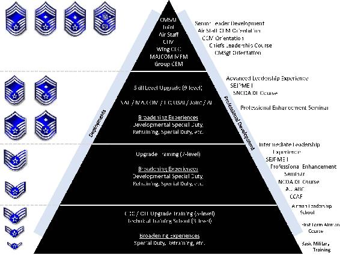

Chapter 9
THE NONCOMMISSIONED OFFICER
Section 9A—Overview
9.1. Introduction:
9.1.1. Noncommissioned officers (NCO) are the backbone of the Air Force. The organization’s success or failure, strengths or weaknesses can be directly related to the effectiveness of its NCOs. This chapter begins by discussing the philosophy, purpose, and structure of the enlisted force. Next, it explores the ranks, roles, responsibilities and developmental levels for Junior Enlisted Airmen, NCOs and senior noncommissioned officers. In addition, it briefly describes those special positions entrusted to senior NCO, such as Air Force Career Field Manager, first sergeant, Command Chief Master Sergeant, and Chief Master Sergeant of the Air Force.
9.1.2. Regardless of rank, every enlisted Airman supports the Profession of Arms to defend the interests of the state, by force and death, when required. This charge is unique to the military profession, and is a calling that requires devotion to service and willingness to sacrifice far beyond that required in other professions. The military as a profession and its core values and supporting ideas are concepts that epitomize the “NCO.” Finally, the purpose for including this chapter within AFH 1, Airman is to provide enlisted Airmen reference material to support their promotion tests.
Section 9B—The Enlisted Force Structure
9.2. Philosophy:
9.2.1. The enlisted force is a diverse corps of functionally and operationally specialized Airmen in the Profession of Arms. Despite the differences across functional and operational lines, there is a compelling need for a deliberate and common approach to force development, career progression, and the assumption of increased supervisory and leadership responsibilities. To best leverage our resources we must have a consistent, well-defined set of expectations, standards, and opportunities for growth for all Airmen, regardless of rank or specialty. The enlisted force structure provides this consistency and common approach. It defines us as Airmen first, specialists second.
9.2.2. All elements of the enlisted force structure reflect the Air Force core values (Integrity First, Service Before Self, and Excellence in All We Do), and are essential to the profession of arms. The core values are the basis for Air Force policies, guidance, and overall focus.
9.3. Purpose of the Force Structure:
9.3.1. The enlisted force structure provides the framework for a force structure that best meets mission requirements, while developing institutional and occupational competencies.
9.3.2. The enlisted force structure defines the tiers, ranks, terms of address, roles, expectations, key positions and approved duty titles for the enlisted force.
9.3.3. Additionally, the enlisted force structure provides a framework for supervisors as they set standards during initial feedback sessions, evaluate progress during mid-term feedback sessions, and document performance on annual reports.
9.4. Air Force Leadership Levels.
9.4.1. The Air Force operates in a dynamic global context across multiple domains requiring leadership skills at three distinct levels: tactical expertise, operational competence, and strategic vision. These levels emphasize a different mix of qualities and experience. The leadership level at which an Airman operates determines the institutional competencies (see paragraph 9.20) required to lead Airmen in mission accomplishment. As shown in Figure 9.1, as Airmen progress from the tactical expertise to strategic vision leadership levels, emphasis on the use of institutional competencies shifts from personal to organizational, with a generally consistent focus on people/team competencies. The nature and scope of leadership challenges as well as preferred leadership methods differ based on the level of leadership and duties. In addition, these levels apply across the entire spectrum of the enlisted force structure (Figure 9.2).
9.4.2. Tactical Expertise Level.
This level is predominantly direct and face-to-face and focused on personal competencies. At the tactical expertise level, Airmen gain a general understanding of team leadership and an appreciation for organization leadership. They master their core duty skills, develop experiences in applying those skills, and begin to acquire the knowledge and experience that will produce the qualities essential to effective leadership. Airmen at the tactical expertise level gain the training, education and experience to become the Air Force’s primary technicians and specialists. They learn about themselves as leaders and how their leadership acumen can affect others through the use of ethical leadership. They assimilate into the Air Force culture and adopt the Air Force Core Values. Airmen at this level focus on honing followership abilities, motivating subordinates and influencing peers to accomplish the mission while developing a warrior ethos. They learn about themselves and their impact on others in roles as both follower and leader in addition to developing their communication skills. The primary focus at the tactical expertise level is accomplishing the missions as effectively and efficiently as possible using available personnel and resources.
Figure 9.1. Air Force Leadership Levels
Figure 9.1. Air Force Leadership Levels
Figure 9.2. Enlisted Force Development
Figure 9.2. Enlisted Force Development
9.4.3. Operational Competence Level.
The full-spectrum of institutional competencies is balanced across the operational competence leadership level. At this level, Airmen understand the broader Air Force perspective and the integration of diverse people and capabilities in operational execution. They transition from specialists to leaders with a broader enterprise perspective who understand Air Force operational capabilities. Based on a thorough understanding of themselves as leaders and followers, Airmen apply an understanding of organizational and team dynamics. They lead teams by developing and inspiring others, taking care of people, and taking advantage of diversity. They foster collaborative relationships through building teams and coalitions, especially within large organizations, and negotiate with others, often external to the organization. Airmen operating at this leadership level normally work below the major command or Headquarters Air Force levels. The majority of enlisted Airmen operate at the tactical expertise and operational competence levels.
9.4.4. Strategic Vision Level.
At this level, Airmen combine highly developed personal and people/team institutional competencies to apply broad organizational competencies. They develop a deep understanding of Air Force capabilities and how Airmen achieve synergistic results and desired effects with their operational capabilities. They also understand how the Air Force operates within joint, multinational, and interagency relationships. At the strategic vision level, an Airman employs military capabilities, applying the operational and strategic arts with a thorough understanding of unit capabilities, the Air Force at large, and joint and coalition forces. They have an enterprise perspective with a thorough understanding of the structure and relationships needed to accomplish strategic objectives. The strategic vision level focuses on the effects an Airman can have across a major command, a theater, the Air Force, or even other Services or the Department of Defense. The Chief Master Sergeant of the Air Force (CMSAF) and few other senior NCOs assigned to higher headquarters operate at this level.
9.5. Enlisted Force Structure Tiers, Ranks and Roles.
The enlisted force structure is comprised of three distinct and separate tiers, each correlating to increased levels of education, training, and experience, which build increasing levels of proficiency. The tiers are Junior Enlisted Airmen, Noncommissioned Officer, and Senior Noncommissioned Officer, with multiple ranks in each tier. Each rank includes an official abbreviation and term of address, as outlined below. Unofficial terms for ranks are not appropriate terms of address (e.g., Tech, Senior, etc.); however, Airmen senior or equivalent to the member may use first names and/or call signs. The three tiers correlate to increased leadership and managerial responsibilities, with each tier building on the responsibilities of the previous one. Therefore, senior NCOs are expected to have mastered NCO responsibilities. Likewise, NCOs are expected to have mastered Junior Enlisted Airmen responsibilities. The primary goal in each tier is mission accomplishment.
9.5.1. The Junior Enlisted Airman Tier.
This tier consists of airman basic, airman, airman first class, and senior airman. Initial enlisted accessions enter the Air Force in this tier (airman basic, airman, or airman first class), and focus on adapting to military requirements, being part of the profession of arms, achieving occupational proficiency, and learning how to be highly productive members of the Air Force. In this tier, Airmen prepare for increased responsibilities and ensure they are trained, qualified, and ready to operate, both at home station and in an expeditionary environment. Junior Enlisted Airmen are introduced to the institutional competencies and continue to broaden their technical skills.
9.5.1.1. Airman Basic and newly enlisted Airmen. Airmen basics, as well as Airmen who initially enlist into the Air Force at the airman or airman first class rank, are primarily adapting to the requirements of the military profession, acquiring knowledge of military customs, courtesies, and Air Force standards, as well as striving to attain occupational proficiency. At their first duty station, they perform basic tasks under close supervision. The written abbreviation for airman basic is “AB” and the official term of address is “Airman Basic” or “Airman.”
9.5.1.2. Airman. Airmen are still learning and adapting to the military profession, and are expected to understand and conform to military standards, customs, and courtesies. Airmen begin to show occupational proficiency at basic tasks and still require significant supervision and support. The written abbreviation is “Amn” and the official term of address is “Airman.”
9.5.1.3. Airman First Class. Airmen first class fully comply with Air Force standards and devote time to increasing their skills in their career fields and the military profession, while becoming effective team members. After a short time at their first duty station, they are often skilled on numerous tasks. Continued supervision is essential to ongoing occupational and professional growth. Typically, the 5-skill level is earned at this grade. The written abbreviation is “A1C” and the official term of address is “Airman First Class” or “Airman.”
9.5.1.4. Senior Airman. Senior airmen commonly perform as skilled technicians and trainers. They begin developing supervisory and leadership skills through progressive responsibility, Airman Leadership School (ALS), individual study, and mentoring. Senior Airmen strive to establish themselves as effective trainers through the maximum use of guidance and assistance from officer and enlisted leaders. They may serve as first-line supervisors upon completion of ALS. The written abbreviation is “SrA” and the official term of address is “Senior Airman” or “Airman.”
9.5.2. The NCO Tier, Ranks and Roles.
This tier consists of staff sergeant and technical sergeant. NCOs continue occupational growth and become expert technicians while developing as leaders, supervisors, managers, and mentors in the profession of arms. Additionally, NCOs ensure they keep themselves and subordinates trained, qualified, and ready to deploy and operate at home station and in an expeditionary environment. In this tier, NCOs understand and internalize institutional competencies in preparation for increased responsibilities, while pursuing professional development through a variety of means, including Enlisted PME.
9.5.2.1. Staff Sergeant. Staff sergeants are primarily highly skilled technicians with supervisory and training responsibilities. Typically, at this rank they earn the 7-skill level. They must continuously strive to further their development as technicians, supervisors, and leaders through professional development opportunities, including distance learning and/or in-residence Air Force Enlisted PME and Senior Enlisted Joint PME. They are responsible for their subordinates’ development and the effective accomplishment of all assigned tasks. They must ensure proper and effective use of all resources under their control to ensure the mission is effectively and efficiently accomplished. They should consider broadening opportunities through the Development Special Duty selection process. The written abbreviation is “SSgt” and the official term of address is “Staff Sergeant” or “Sergeant.”
9.5.2.2. Technical Sergeant. Technical sergeants are often their organizations’ technical experts. They continuously strive to further their development as technicians, supervisors, leaders and mentors through professional development opportunities, including distance learning and/or in-residence Air Force Enlisted PME and Senior Enlisted Joint PME. They should consider broadening opportunities through the Development Special Duty selection process. The written abbreviation is “TSgt” and the official term of address is “Technical Sergeant” or “Sergeant.”
9.5.3. The Senior NCO Tier, Ranks and Roles.
This tier consists of master sergeant, senior master sergeant, chief master sergeant and Chief Master Sergeant of the Air Force. Senior NCOs serve as leaders in the profession of arms. They advise, supervise and mentor others to further grow and develop junior enlisted Airmen and NCOs under their charge. In this tier, senior NCOs continue professional development through a variety of means, including Enlisted PME. They have a great deal of leadership experience they use to leverage resources and personnel against a variety of mission requirements. Senior NCOs participate in decision-making processes on a variety of technical, operational, and organizational issues.
9.5.3.1. Master Sergeant. Master sergeants are technical experts, transitioning from first-line supervisors to leaders of operational competence. This rank carries significantly increased responsibilities and requires a broad perspective and greater leadership and management skills. MSgts are expected to accomplish the mission through the employment of teams by merging subordinates’ talents, skills, and resources with other teams’ functions. MSgts must complete an Associate’s Degree from the Community College of the Air Force in their current Air Force Specialty, if not already earned, to become eligible for promotion to SMSgt. MSgts continue their professional development through distance learning and/or in-residence Air Force Enlisted PME courses. They are also eligible to attend sister-service or International Senior NCO PME, and are encouraged to complete Senior Enlisted Joint PME II. They should consider broadening opportunities through the Development Special Duty selection process. The written abbreviation is “MSgt” and the official term of address is “Master Sergeant” or “Sergeant.”
9.5.3.2. Senior Master Sergeant. Senior master sergeants are key, experienced, operational leaders skilled at merging teams’ talents, skills, and resources with other organizations. Senior Master Sergeants continue to develop their leadership and management skills and earn their 9-skill level. Senior Master Sergeants continue their professional development through distance learning and/or in-residence Air Force enlisted PME courses. They are also eligible to attend sister-service or International senior NCO PME, and are encouraged to complete Senior Enlisted Joint PME II. The written abbreviation is “SMSgt,” and the official term of address is “Senior Master Sergeant” or “Sergeant.”
9.5.3.3. Chief Master Sergeant. Chief master sergeants serve in the highest enlisted rank and hold strategic leadership positions with tremendous influence at all levels of the Air Force. They continue to develop personal leadership and management skills to prepare for ever increasing positions of responsibility. They are charged with mentoring and developing junior enlisted personnel and strongly influence the professional development of junior officers. They bring substantial operational and occupational experience as well as strong institutional skills to their organizations and assigned tasks. All newly selected Regular Air Force Chief Master Sergeants will attend the Chief Master Sergeant Leadership Course. Air Force Reserve and Air National Guard Chief Master Sergeants will apply for attendance through their commands. Chief Master Sergeants serve in key leadership positions such as Combatant Command Senior Enlisted Leader, Command Chief Master Sergeant, Group Superintendent, PME Commandants, Functional and Career Field Managers. The written abbreviation is “CMSgt” and the official term of address is “Chief Master Sergeant” or “Chief.”
9.5.3.4. Chief Master Sergeant of the Air Force. The CMSAF is the senior enlisted leader of the Air Force and takes precedence over all enlisted members. The CMSAF provides leadership to the enlisted force and advises the Chief of Staff of the Air Force, Secretary of the Air Force, Chairman Joint chief of Staff, and the Secretary of Defense on enlisted matters. The CMSAF communicates with the force, serves on boards and committees for numerous organizations affecting Airmen, testifies before congress, and is the Air Force career field manager for command chief master sergeants and group superintendents. The CMSAF also consults with sister service senior enlisted advisors on issues affecting all enlisted members; engages with foreign military leadership regarding theater security cooperation and partner nation development efforts; represents the Air Force to the American public, professional organizations and the media; and manages the Air Force Order of the Sword Program. The written abbreviation is “CMSAF” and the official term of address is “Chief Master Sergeant of the Air Force” or “Chief.”
Figure 9.3. CMSAF
Figure 9.3. CMSAF
The idea of creating a CMSAF position surfaced as early as 1964 when the Air Force Association’s Airman Advisory Council presented the idea. At that time, Air Force leadership rejected the proposal, fearing that such a position would undermine the formal chain of command. Purposeful action did not come until 1966 when Congressman Mendel Rivers introduced a bill that would mandate each of the Services to appoint a senior NCO. Congressman Rivers became convinced that the Air Force needed to follow the example of the Marine Corps (which had created the position of Sergeant Major of the Marine Corps in 1957) and the Army (which had created the position of Sergeant Major of the Army in 1965) and appoint a senior enlisted advisor to the Chief of Staff of the Air Force. Although the Rivers bill never passed, the Air Force recognized the tremendous support behind the proposal. On 24 October 1966, Chief of Staff of the Air Force General John P. McConnell announced the newly created position of CMSAF. In April 1967, Chief Paul W. Airey became the first to wear the unique insignia with the wreath around the star. Over the next decade, support for the office grew among senior leaders and within the enlisted force. Today, the CMSAF wears the chevron depicted in Figure 9.3. To date, 17 individuals have previously served in this office. The present CMSAF, Kaleth O. Wright, took office in February 2017.
9.5.3.4.1. CMSAF Paul Wesley Airey:
9.5.3.4.1.1. Paul Wesley Airey enlisted in the Army Air Forces as a radio operator on 16 November 1942. By the height of World War II, he was serving as an aerial gunner aboard B-24 bombers. While in Europe, Airey and his crew were shot down over Vienna, Austria, captured, and held prisoner by the Germans from July 1944 to May 1945. During the Korean conflict, he was awarded the Legion of Merit for creating a means of constructing equipment from salvaged parts, improving corrosion control of sensitive radio and radar components. Following the war, Airey took the job of first sergeant, a position he later said was one of the most important in the Air Force. He subsequently served as first sergeant for six squadrons at four bases over the next 12 years before being appointed to the highest NCO position.
CMSAF Paul W. Airey
April 1967 – July 1969
Died: 11 March 2009
CMSAF Paul W. Airey
April 1967 – July 1969
Died: 11 March 2009
9.5.3.4.1.2. Upon assuming his new responsibilities, CMSAF Airey began tackling the problem of personnel retention, an issue he identified as one of the greatest challenges he faced. The first-term reenlistment rate was the lowest it had been in 12 years, but Airey did not attribute the great decline to the unpopularity of the war in Vietnam. He felt it was the consequence of “poor pay, numerous remote assignments, good civilian employment opportunities, and an inequitable promotion system.” He became an advisor to a committee to investigate and recommend a more equitable system. His efforts helped produce the Weighted Airman Promotion System which was adopted in 1970, eliminating local enlisted promotion boards and equalizing promotion opportunities across career fields. In retirement, Airey continued to be an enlisted advocate and spoke to Airmen around the force. CMSAF Airey died in 2009.
9.5.3.4.2. CMSAF Donald L. Harlow:
9.5.3.4.2.1. Born in Waterville, Maine, Donald L. Harlow was the youngest of nine children. At age 22, after working a variety of jobs to help support his mother and pay his tuition at a private preparatory school, he was drafted into the Army Air Corps. Serving as an armament and gunnery instructor, he taught cadets to fieldstrip and reassemble their weapons and to synchronize firing guns through aircraft propellers. He transferred to the personnel career field in 1945 and advanced to the grade of Staff Sergeant before his February 1946 discharge from active duty. During the Korean War, Harlow was recalled to active duty, holding various positions in the personnel career field. At 16 years of service, he was promoted to Chief Master Sergeant and was the personnel Sergeant Major for Headquarters United States European Command and the Sergeant Major for the Executive Services Division, Office of the Vice Chief of Staff.
CMSAF Donald L. Harlow
August 1969 – September 1971
Died: 18 June 1997
CMSAF Donald L. Harlow
August 1969 – September 1971
Died: 18 June 1997
9.5.3.4.2.2. As the second to take the reins, CMSAF Harlow continued to cut a path through the misunderstanding, confusion, and mistrust that surrounded the CMSAF Ever vigilant, he campaigned for and refined the newly established Weighted Airman Promotion System, garnered continued flight pay for NCOs attending in-residence PME and worked toward equal per diem for enlisted and officers. During Vietnam, he directed his attention to where he felt it was most needed: young Airmen and their issues, including racial tension, assignment concerns, and promotion problems. Known for his no-nonsense approach and keen ability to listen, Harlow advised the Chief of Staff of the Air Force on matters of true concern to the enlisted force. While many of his recommendations did not result in policy changes during his tenure, he planted the seeds for future change. After retiring, Chief Harlow was a strong lobbyist for enlisted equality. CMSAF Harlow died in 1997.
9.5.3.4.3. CMSAF Richard D. Kisling:
CMSAF Richard D. Kisling
October 1971 – September 1973
Died: 3 November 1985
CMSAF Richard D. Kisling
October 1971 – September 1973
Died: 3 November 1985
9.5.3.4.3.1. Richard D. Kisling and his 10 siblings were raised on a farm in Iowa during the Great Depression and the dust bowl years. The patriotism he developed during his childhood was called on when he was drafted into the Army’s combat infantry in 1945 during the effort to reconstitute the number of soldiers driving through France. After training and deployment times, Kisling arrived in France a month before the war in Europe ended. His unit assumed responsibility for negotiating the repatriation of displaced Soviets. From there, Kisling separated from the service for civilian life. After a few months spent missing the camaraderie, he reenlisted for a brief stint in the Army. In 1947, he joined the Army Air Forces, serving first as a clerk and later a personnel specialist. Upon his promotion to Senior Master Sergeant in September 1958, he was among the first group of Air Force enlisted members to wear the super grades of Senior Master Sergeant and Chief Master Sergeant.
9.5.3.4.3.2. Once assigned to the Pentagon, CMSAF Kisling found the enlisted force struggling through the development of a new Air Force. After talking with several base officials, it was determined that the Air Force needed to develop their NCOs like they did their officers. So Kisling placed concerns for NCO professional development in the forefront of discussion at the Pentagon. His persistence paid off when the first senior NCO academy was approved by Congress in 1972. The Academy officially opened its doors in January 1973; however, before the Academy opened its doors, the original plan was to restrict its attendance to first sergeants. In the end, Kisling won the battle of making professional development available to all senior NCOs. His concern for such enlisted issues as housing, pay, promotions, education and training, and assignments earned him the respect of his peers and the nickname, “the GI’s man in Washington.” CMSAF Kisling died in 1985.
9.5.3.4.4. CMSAF Thomas N. Barnes:
9.5.3.4.4.1. Thomas N. Barnes grew up in the war-related industries town of Chester, Pennsylvania. In 1949, he joined the newly created United States Air Force as an aircraft maintainer specializing in hydraulics. His first duty station found him at the leading edge of United States Air Force integration efforts, as one of the first African-Americans to join the unit. Barnes’ unit was flying Korean War support missions. Unbeknownst to others in his squadron, a crew pal taught him the art of flight engineering and let him fly resupply and medical evacuation missions. By his tour’s end, Barnes had gained flight engineer certification, accumulated 750 flight hours over enemy territory and earned the Air Medal. He was the first CMSAF with direct Vietnam experience and the first African-American to serve in the highest enlisted post of a military service. The Chief of Staff of the Air Force consecutively extended him in 1975 and in 1976.
CMSAF Thomas N. Barnes
October 1973 – July 1977
Died: 17 March 2003
CMSAF Thomas N. Barnes
October 1973 – July 1977
Died: 17 March 2003
9.5.3.4.4.2. CMSAF Barnes’ notable contribution came in the area that inspired his greatest passion and ranked among his largest challenges: working to ensure equality among the ranks and races. He took great pride in the part he played in bringing about the Air Force Social Actions Program in 1969. He labored to eliminate barriers for women and convince the Air Force to use them in nontraditional roles. He understood the value of continuing to educate Airmen and believed no one should advance in rank without PME, working to establish the service’s firm commitment to enlisted PME. Recognized throughout the force for his ability to communicate with anyone, Barnes made listening to Airmen a priority. At the beginning of his tenure, the question most asked of Barnes was, “What programs will you implement for the blacks?” “The answer was ‘None’,” Barnes recalls. “I told them I work for all blue suiters.” After his retirement, Barnes remained actively engaged in Air Force issues. CMSAF Barnes died in 2003.
9.5.3.4.5. CMSAF Robert D. Gaylor:
CMSAF Robert D. Gaylor
August 1977 – July 1979
CMSAF Robert D. Gaylor
August 1977 – July 1979
9.5.3.4.5.1. Growing up in Indiana, Robert D. Gaylor wanted to travel and learn a skill. He enlisted in the Air Force in 1948, a transition time for America and the military. As he arrived at basic training, President Truman issued Executive Order 9981, Establishing the President’s Committee on Equality of Treatment and Opportunity In the Armed Forces, calling for equality of opportunity in the United States military. Gaylor had had no experience with segregation or integration and he would witness the long journey to full integration. His first duty was as a military policeman and he excelled throughout his career, advancing to the rank of Master Sergeant with only 7 years and 7 months of service. Serving as an instructor at basic training and the NCO Academy convinced him that special duties help prepare NCOs for greater leadership roles. In 1976, as a member of the Air Force Manpower and Personnel Center, Gaylor traveled extensively, giving 275 leadership talks annually.
9.5.3.4.5.2. CMSAF Gaylor’s goal as the senior enlisted man was to feel the pulse of the enlisted force and serve as a conduit of information. He addressed low morale and the weak military public image head on. He educated the force on the hazards of substance abuse and continued to raise confidence and shift attitudes within the force. He is credited with securing a policy that allowed Senior Airman to transport their families at government expense during permanent change of station moves, a solid step toward improving quality of life. He educated the force in order to eliminate the stereotypes and prejudices working against equal opportunities for minorities and women. Finally, Gaylor promoted leadership. He traveled extensively, talking to Airmen about taking pride in their military careers. He believes one of the most important roles a former CMSAF can play is that of a link between the United States Air Force of the past and today’s service. Gaylor continues to meet and serve Airmen, conducting more than 40 Air Force base visits each year.
9.5.3.4.6. CMSAF James M. McCoy:
CMSAF James M. McCoy
August 1979 – July 1981
CMSAF James M. McCoy
August 1979 – July 1981
9.5.3.4.6.1. James M. McCoy was raised in the midwest, attending high school in Atchison, Kansas, and college at St. Benedicts College in Atchison and St. Ambrose College in Davenport, Iowa. He seriously considered a vocation in the priesthood, but in 1951, during the height of the Korean War, he enlisted in the United States Air Force as a radar operator. When the war ended, the Air Force had too many operators and needed military training instructors. McCoy volunteered and, with only 6 years of active duty experience, found himself in charge of five groups of training instructors. He continued working within the PME system, serving as NCO preparatory school commandant and as an NCO academy instructor before returning to the personnel training field in 1973. A year later he was selected as one of the United States Air Force’s 12 Outstanding Airmen of the Year. He then became Strategic Air Command’s first senior enlisted advisor. While there, McCoy was a member of the Air Force Management Improvement Group, chaired by CMSAF Barnes, which formed to discuss management issues and propose solutions. As a result, enlisted PME expanded into five phases.
9.5.3.4.6.2. With the public still questioning the military involvement in Vietnam, the Air Force was experiencing the lowest recruiting year ever; retention rates were also dropping when CMSAF McCoy took office. His first challenge was to improve those numbers. In late 1979, along with former CMSAF Kisling, he testified before Congress that people were not reenlisting in the Air Force because they could not make ends meet on enlisted pay. McCoy worked with recruiters to get the right people in the Air Force and sought to improve the PME system from basic training to the NCO and senior NCO level. During his tour as CMSAF, the Stripes for Exceptional Performers Program was instituted to provide incentive and an alternate promotion option for enlisted members. In addition to visiting Airmen, he placed great value on being involved with the Pentagon staff. He expanded the list of boards and conferences where he believed the CMSAF should have a role. In retirement, McCoy remains at the forefront of Air Force issues, having served in leadership positions with Air Force professional organizations and speaking to Airmen throughout the force.
9.5.3.4.7. CMSAF Arthur L. "Bud" Andrews:
CMSAF Arthur L. Andrews
August 1981 – July 1983
Died: 26 October 1996
CMSAF Arthur L. Andrews
August 1981 – July 1983
Died: 26 October 1996
9.5.3.4.7.1. In January 1953, out of a sense of patriotism and a desire to grow and develop, Arthur "Bud" L. Andrews enlisted in the Air Force. During basic training, his training instructor asked for volunteers to serve as APs. Thinking AP meant “air police,” Andrews raised his hand. As it turned out, the training instructor wanted area policemen. He spent the next 3 months picking up cigarette butts outside the barracks. He eventually had an opportunity to enter the military police force, where he served most of the next 14 years. In 1959, while working as an investigator, Andrews was credited with solving a murder committed by an Airman Second Class. By 1970, Andrews had served tours in Morocco, Thailand, and Vietnam; became a first sergeant; and was promoted to the rank of Senior Master Sergeant. During his career he spent a decade as a first sergeant.
9.5.3.4.7.2. Upon assuming his new position, CMSAF Andrews’ top priority could be described as getting back to basics. He believed the most vexing problems (such as terms of pay, benefits, recruitment, and retention) had been addressed and were evolving to meet Airmen’s needs. While he continued to advise the Chief of Staff of the Air Force on quality-of-life improvements, he began to focus on cultural change. He felt it was time for Airmen to “think we instead of me, me, me.” He wanted people to focus on “how we’re supposed to dress, act, and react toward subordinates and superiors, and how we’re supposed to do our jobs.” He challenged NCOs to “take care of their people and to accomplish the mission.” He further suggested that NCOs look at themselves if they were dissatisfied with their jobs. He dispelled the days of “leadership by stress” and applauded PME for creating a smarter force. Andrews believed the CMSAF needed to know the issues firsthand, which kept him traveling extensively around the Air Force. CMSAF Andrews died in 1996.
9.5.3.4.8. CMSAF Sam E. Parish:
CMSAF Sam E. Parish
August 1983 – June 1986
CMSAF Sam E. Parish
August 1983 – June 1986
9.5.3.4.8.1. Sam E. Parish was raised and educated in north Florida. In 1955, at age 17, he joined the Air Force as a ground weather equipment operator. His first assignment at Wiesbaden Air Base, Germany, brought him into an experimental program to cross train as a weather observer. That experiment led to a career. In 1960, he became the youngest 7-skill level in his career field and continued to excel. While the chief observer for the 7th Weather Squadron in Heidelberg, Germany, he was quickly promoted to Senior Master Sergeant, and at age 31, Parish made Chief Master Sergeant. He was a member of the first senior NCO academy class, and was selected as the Air Weather Service Senior Enlisted Advisor in 1973. He returned to Germany in 1976 as the Consolidated Base Personnel Office Personnel Sergeant Major, and in 1977 became the senior enlisted advisor for the United States Air Forces in Europe, where he established the United States Air Forces in Europe First Sergeant of the Year program. Parish later served as the 40th Air Division and Strategic Air Command senior enlisted advisor.
9.5.3.4.8.2. CMSAF Parish tackled a range of enlisted personnel issues during his tenure. One such issue was the fixed-phase point for promotion to Senior Airman, which would promote qualified Airmen to Senior Airman at a set point in their initial enlistment, allowing them a chance to be selected for Staff Sergeant during their first enlistment. He also obtained Chief of Staff of the Air Force approval to allow flight line personnel to wear a functional badge on their uniform, which led to United States Air Force members in all specialties being able to wear functional badges identifying their career fields. He also obtained Chief of Staff of the Air Force approval to establish the John Levitow Award for each level of PME and to implement the First Sergeant of the Year Program Air Force-wide. He was known as a straight shooter who did not waste time trying to figure out what people wanted to hear. Instead, he told them what they needed to hear. To Parish, the CMSAF is the most important job in the Air Force from an enlisted program perspective. In retirement, he continues to support Airmen by attending service functions and visiting bases throughout the Air Force.
9.5.3.4.9. CMSAF James C. Binnicker:
9.5.3.4.9.1. James C. Binnicker, raised in Aiken, South Carolina, joined the Civil Air Patrol in high school with aspirations of becoming a pilot. Cadet of the Year honors earned him a scholarship to attend flight school and the right to represent his state as a foreign exchange cadet in Great Britain. But, in 1957, doctors detected a high frequency hearing loss, disqualifying him from the program. To stay close to his passion, he joined the Air Force in the personal equipment, later called life support, career field. By 1964, Binnicker cross trained into air operations, planning flights for missions to Vietnam. While serving in Vietnam from 1968 to 1969, he served as NCOIC of operations for the 22d Tactical Air Support Squadron, and later as a Vietnamese-speaking linguist at the Republic of Vietnam Armed Forces Language School in Saigon. While in Vietnam, he set his sights on becoming the CMSAF and, as such, being an advocate for enlisted Airmen. He also served as a first sergeant and base Sergeant Major at Seymour Johnson Air Force Base, North Carolina. In 1977, on the recommendation of CMSAF Thomas Barnes, he became the sole enlisted member of the newly established President’s Commission on Military Compensation. In addition, he spent over 7 years as the senior enlisted advisor for the 4th Tactical Fighter Wing, 12th Air Force, Pacific Air Forces, and Tactical Air Command.
CMSAF James C. Binnicker
July 1986 – July 1990
Died: 21 March 2015
CMSAF James C. Binnicker
July 1986 – July 1990
Died: 21 March 2015
9.5.3.4.9.2. CMSAF Binnicker’s first order of business was tackling the Airman performance report, a system of ratings from 1 to 9. In an effort to more accurately differentiate between Airmen, the enlisted performance report was created, along with a system to provide and document performance feedback. Next, Binnicker set his sights on admitting Master Sergeants to the senior NCO academy. He believed giving Airmen all the responsibility they could handle would result in attracting and retaining higher quality people in the Air Force. He also worked to give minorities and women more responsibilities throughout the Air Force. The Chief of Staff, United States Air Force recognized Binnicker as a staunch advocate and spokesman for enlisted issues. His commitment to Airmen did not change following his retirement in 1994. He stayed abreast of issues affecting the enlisted force and visited PME classes to talk with students worldwide. In addition, he served as president and chief executive officer for the Air Force Enlisted Village until his death in March 2015.
9.5.3.4.10. CMSAF Gary R. Pfingston:
9.5.3.4.10.1. Gary R. Pfingston played minor league baseball before enlisting in the Air Force as an aircraft mechanic. During his first assignment as a B-52 crew chief at Castle Air Force Base, California, he went to work one day with a pack of cigarettes and $2, and did not return home for 30 days because the Cuban Missile Crisis sent the base into lockdown. Ten years later, Pfingston worked aircraft maintenance in Thailand, reconfiguring B-52s to carry conventional bombs in what became known as “iron belly” modifications. In 1973, he returned to the states and spent the next 8 1/2 years as a military training instructor, and later, chief of the military training division. During an assignment to Andersen Air Force Base, Guam, Pfingston broke his back, was hospitalized for 147 days, and returned to duty as the first sergeant. Future assignments had Pfingston taking part in the first ability to survive and operate exercise in a chemical environment and serving as a senior enlisted advisor.
CMSAF Gary R. Pfingston
August 1990 – October 1994
Died: 23 June 2007
CMSAF Gary R. Pfingston
August 1990 – October 1994
Died: 23 June 2007
9.5.3.4.10.2. CMSAF Pfingston’s focus during his tenure was the Air Force drawdown and budget. Holding the highest enlisted position during Desert Storm, he worked to restore basic allowance for subsistence to the troops living in field conditions and increasing the Servicemember’s Group Life Insurance, but the toughest challenge he faced was the Air Force downsizing. To avoid involuntary separations, Pfingston worked to implement the Voluntary Separation Incentive and Special Separation Bonus Programs. His idea to provide career paths and milestones in line with the officer career model, led to the career field education and training plan, three-level and seven-level technical schools for all career fields, and mandatory in-residence PME schools. He also found himself involved with issues such as homosexuals serving in the military, Air Force specialty codes opening up to women, assignment policies including the Enlisted Quarterly Assignments Listing (EQUAL) and EQUAL-Plus, and even the introduction of the new senior NCO stripes. Pfingston remained active in what he called the “communication chain” of former CMSAFs advocating for the enlisted force after his retirement. CMSAF Pfingston died in 2007.
9.5.3.4.11. CMSAF David J. Campanale:
CMSAF David J. Campanale
October 1994 – November 1996
CMSAF David J. Campanale
October 1994 – November 1996
9.5.3.4.11.1. Worcester, Massachusetts, native David J. Campanale said he had the world by the throat after high school. A promising athlete, when a baseball career fell through, his mother encouraged him to join the Air Force in 1970. Campanale completed aircraft maintenance technical school despite poor study habits and breaking his collarbone playing football. He credits his supervisors at his first base with turning his attitude around. Campanale sought challenges, volunteering for several tours to Andersen Air Force Base, Guam, in support of B-52 Arc Light missions in Southeast Asia. He later volunteered to transfer to aerial repair. As he rose through the ranks, Campanale earned the distinguished graduate award at both the NCO academy and senior NCO academy and was stripes for exceptional performer-promoted to Master Sergeant. He later served as a senior enlisted advisor, a role called “richly rewarding.”
9.5.3.4.11.2. The year CMSAF Campanale began his tour, the military launched the new TRICARE health program. The change introduced many questions and a great deal of anxiety. He led the charge to alleviate those feelings through education. Also, when Congress threatened to change the retirement system to “High One” effectively reducing retirement pay, Campanale quickly responded. With senior leader support, Campanale stood before Congress in the successful fight against the proposed change. Another important recruitment and retention milestone was adoption of the one-plus-one dormitory standard, which gave each Airman his or her own room. Not a proponent of long speeches, while visiting bases he encouraged questions rather than delivering a speech, which created meaningful dialogue. He believes anyone can become CMSAF and offers those who want to follow in his footsteps this piece of advice: Be honest and keep your promise. Campanale continues to actively mentor Airmen serving today.
9.5.3.4.12. CMSAF Eric W. Benken:
9.5.3.4.12.1. Raised in Cincinnati, Ohio, after graduating high school Eric W. Benken moved to Houston, Texas, to join his parents. Struggling to find a good paying job out of the area, he joined the Air Force as an administrative specialist. Although first assigned to Ellington Air Force Base, Texas (less than 25 miles from Houston), he would get his chance to travel 9 months later, on orders to Ching Chuan Kang Air Base, Taiwan. During his tour, he deployed to South Vietnam, where he spent his 20th birthday. As the United States Air Forces Europe senior enlisted advisor, he facilitated the highly successful beddown of forces during the Bosnia Operation Joint Endeavor. He led numerous quality-of-life initiatives, including eliminating/remodeling a third of the United States Air Forces Europe zero-privacy dormitories, making way for the newly developed one-plus-one dormitories. During his assignment, Benken crafted the NCO Professional Development Seminar, an effort to fill the career education void between Airman Leadership School and the NCO academy.
CMSAF Eric W. Benken
November 1996 – August 1999
CMSAF Eric W. Benken
November 1996 – August 1999
9.5.3.4.12.2. During his tenure as CMSAF, he focused heavily on fundamental discipline, getting back to basics, and changing the culture of the Air Force to meet new expeditionary requirements. He championed Warrior Week at basic training and ensured funding for a simulated deployed location at Lackland Air Force Base, Texas. He instituted changes in the First Sergeant Academy curriculum, focusing on deployment responsibilities. He believed changing the title “senior enlisted advisor” to “Command Chief Master Sergeant” and adding the star to the chevron were critical to the success of these positions, in garrison and on the battlefield. CMSAF Benken engaged Congress and special interest groups on numerous fronts, ultimately defeating attempts to alter basic military training gender-integrated training, and reversing the diminished retirement system of 1986. Other significant challenges included ensuring TRICARE met health care needs, and modernizing the force with a limited budget. He believed Air Force leaders should focus on the future and take steps to prepare the force for the next century. Benken served as the first co-chair of the Air Force Retiree Council, currently serves on the board of directors for the Airmen Memorial Foundation and the Mission Readiness Organization Executive Advisory Council, and continues to speak at a variety of Air Force functions.
9.5.3.4.13. CMSAF Jim Finch:
CMSAF Frederick J. Finch
August 1999 – June 2002
CMSAF Frederick J. Finch
August 1999 – June 2002
9.5.3.4.13.1. Jim Finch entered the Air Force from East Hampton, New York, expecting to do only a 4-year hitch. He planned to learn a trade and see what the world had to offer and move on. Finch spent the early part of his career in the “bomb dumps” as a missile maintenance crew chief before becoming a PME instructor. After 4 years of teaching, Finch moved to the Leadership and Management Development Center at Maxwell Air Force Base Alabama. While there, he helped develop a correspondence version of the NCO preparatory course, and taught new PME instructors. He was subsequently selected as the Air Force NCO PME functional manager at the Air Force Military Personnel Center. While there, he was involved in restructuring the PME program from four to three levels and implementing procedures to create Airman Leadership School and allow Master Sergeants to attend the senior NCO academy. Finch later served as an NCO Academy commandant, the 11th Air Force senior enlisted advisor, and Air Combat Command, Command Chief Master Sergeant.
9.5.3.4.13.2. When CMSAF Finch took the reins, the Air Force was moving from a cold war to an expeditionary mindset. He implemented CMSAF Benken’s basic training Warrior Week vision to help new recruits understand that the expeditionary Air Force was not a temporary concept. He credits the program’s success to the men and women at Lackland candidates and gave commanders more selection flexibility. Known as a man of vision, he spent 3 years focusing on enlisted members’ concerns, and implementing programs to improve future preparedness. Finch recognized that the armed forces had to change to meet changing threats to national security. He believed future-focused leaders were paramount to success and made significant contributions to ensure the force developed that kind of leader. Finch maintains his vision for Airmen by serving on boards of Air Force-associated organizations, visiting Air Force members worldwide, and supporting current CMSAF agendas.
9.5.3.4.14. CMSAF Gerald R. Murray:
9.5.3.4.14.1. Gerald R. Murray, a native of Boiling Springs, North Carolina, grew up on his grandfather’s farm. Graduating high school in 1974, he briefly attended college, married his school sweetheart, and worked in textile mills and construction before entering the Air Force as an F-4 aircraft crew chief in 1977. Murray’s performance and capabilities were quickly recognized by his promotion to Senior Airman below the zone, and selection as an F-16 aircraft maintenance instructor. He continued to excel as the senior F-16 crew chief on "Victor Alert" at Incirlik Air Base, Turkey, and later as an A-10 squadron production superintendent. Deployed in support of Operations Desert Shield and Desert Storm, he played a key role as the combat turn director at the most forward operation location in theater, garnering the Bronze Star, and later the Air Force General Lew Allen Trophy. After standing up a new A-10 squadron at Moody Air Force Base, Georgia, Murray’s performance and leadership were recognized again when he was pulled from the flight line to serve as the 347th Wing Senior Enlisted Advisor and Command Chief Master Sergeant. He later served as the command Chief Master Sergeant at 5th Air Force, United States Forces Japan, and Pacific Air Forces Command.
CMSAF Gerald R. Murray
July 2002 – June 2006
CMSAF Gerald R. Murray
July 2002 – June 2006
9.5.3.4.14.2. An evolving expeditionary air force and a changed world after the 11 September 2001 terrorist attacks were catalysts for change during Murray’s tenure. Murray refocused basic military training and PME toward expeditionary combat principles and took a leading role in developing a new physical fitness program to improve Air Force-wide capabilities and readiness. Additionally, Murray led efforts to balance the enlisted force structure by increasing high-year tenure for four enlisted grades, bringing back the career job reservation and NCO retraining programs, and redistributing senior NCO promotions in critical and unbalanced Air Force specialty codes. Understanding the need to maintain strong leadership, he initiated a deliberate approach to NCO professional development; led changes to the management of Chief Master Sergeants, including alignment under the Air Force Senior Leaders Management Office, and added a Chief Master Sergeant’s leadership course to the enlisted PME continuum. In retirement, Murray remains active in shaping Airmen development, serving with Air Force professional organizations and continuing to speak throughout the force.
9.5.3.4.15. CMSAF Rodney J. McKinley:
CMSAF Rodney J. McKinley
June 2006 – June 2009
CMSAF Rodney J. McKinley
June 2006 – June 2009
9.5.3.4.15.1. Rodney J. McKinley grew up in Mt. Orab, Ohio, and originally entered the Air Force in 1974 as a medical technician. He separated from the Air Force in 1977 to pursue his education. He returned to active duty in 1982 as an aircraft maintenance specialist and served in various aircraft maintenance positions at Myrtle Beach Air Force Base, South Carolina, and Clark Air Base, Philippines. In 1991, he became a first sergeant, a position he held for the next 10 years, with assignments at Myrtle Beach Air Force Base, South Carolina; Ghedi Air Base, Italy; Tinker Air Force Base, Oklahoma; and Ramstein Air Base, Germany. Chief McKinley then served as a command Chief Master Sergeant at Ramstein Air Base, Germany; Langley Air Force Base, Virginia; and 11th Air Force at Elmendorf Air Force Base, Alaska. In February 2003, during the early days of Operation Iraqi Freedom, he deployed as Command Chief Master Sergeant to the 379th Air Expeditionary Wing, Southwest Asia. Before being selected as the 15th CMSAF, he was the Pacific Air Forces Command Chief Master Sergeant at Hickam Air Force Base, Hawaii.
9.5.3.4.15.2. During his tenure, CMSAF McKinley was an advocate for winning the Global War on Terrorism, developing and taking care of Airmen, and modernizing aging air, space, and cyberspace assets. CMSAF McKinley focused on properly organizing, training, and equipping Airmen during a time when many were being tasked outside their core competencies. His efforts to improve the enlisted evaluation system resulted in the first major changes to feedback and performance report forms since 1990. CMSAF McKinley also advocated for an educated enlisted corps and strongly encouraged Airmen to pursue their Community College of the Air Force degree earlier in their careers. A strong advocate for the “American Airman” spirit, he opened the door for creation of the Airman’s Creed, which codified core Air Force beliefs and articulated the warrior ethos. His vision led to the creation of the Enlisted Heroes Walk on the parade field at Lackland Air Force Base, Texas, and the return of the enlisted collar brass and Good Conduct Medal. CMSAF McKinley also pursued improvements in Airman health and fitness, wounded warrior care, child care, spousal employment opportunities, and accompanied and unaccompanied housing.
9.5.3.4.16. CMSAF James A. Roy:
9.5.3.4.16.1. James A. Roy grew up in Monroe, Michigan, and originally entered the Air Force in 1982 as a heavy equipment operator. He served in various civil engineer positions at MacDill Air Force Base, Florida; Osan Air Base, Republic of Korea; Kunsan Air Base, Korea; Andersen Air Force Base, Guam; and Keesler Air Force Base, Mississippi. He returned to the site of his original technical training—Fort Leonard Wood, Missouri—as an instructor and instructor supervisor. As a Senior Master Sergeant, he transferred into personnel as the military personnel flight superintendent, Keesler Air Force Base, in 1999. From there, Chief Roy served as a Command Chief Master Sergeant at wing, numbered Air Force, and unified combatant command levels. These assignments included Columbus Air Force Base, Mississippi; Charleston Air Force Base South Carolina; Langley Air Force Base, Virginia; and 5th Air Force and United States Forces Japan, at Yokota Air Base, Japan. In October 2004, he deployed as the 386th Air Expeditionary Wing, Southwest Asia Command Chief Master Sergeant. He then served as the United States Pacific Command senior enlisted leader at Camp H.M. Smith, Hawaii.
CMSAF James A. Roy
June 2009 – January 2013
CMSAF James A. Roy
June 2009 – January 2013
9.5.3.4.16.2. Chief Roy’s key focus areas included ensuring Airmen were ready for joint and coalition operations; deliberately developing Airmen through education, training and experience; and building a culture of resiliency within Airmen and their families. He worked to expand and solidify training and engagement in joint and coalition environments, which helped enhance the employability of Airmen in the increasingly joint and coalition warfighting environment. He also stressed the importance of updating and expanding distance-learning opportunities, and developed and promoted the Enlisted PME-Next construct, designed to close the gap in PME following Airman Leadership School.
9.5.3.4.17. CMSAF James A. Cody:
CMSAF James A. Cody
January 2013 – February 2017
CMSAF James A. Cody
January 2013 – February 2017
9.5.3.4.17.1. James A. Cody grew up in Lakeville, Massachusetts, and entered the Air Force in 1984 as an air traffic controller. He served in various air traffic control positions at Ramstein Air Base, Germany; Pease Air Force Base, New Hampshire; Vandenberg Air Force Base, California; Osan Air Base, Republic of Korea; Incirlik Air Base, Turkey; Langley Air Force Base, Virginia; and MacDill Air Force Base, Florida. In April 2002, he deployed as the superintendent of the Joint Task Force–Southwest Asia Combat Airspace Management Cell. Chief Cody then served as a Command Chief Master Sergeant at a task force; wing; numbered Air Force; and major command level. These included assignments to Travis Air Force Base, California; MacDill Air Force Base, Florida; 18th Air Force at Scott Air Force Base, Illinois, and Air Education and Training Command at Joint Base San Antonio-Randolph, Texas.
9.5.3.4.17.2. Immediately upon assuming the position, Chief Cody committed to the continued evolution of the enlisted force. He identified various policies and processes, and with the support of the Air Force Chief of Staff and Enlisted Board of Directors moved each of them forward to ensure the enlisted force was prepared for future challenges. He focused on the deliberate development of Airmen, evolving enlisted PME to a blended learning model, and establishing Developmental Special Duties, which ensured top Airmen were in leadership positions that best leveraged their proven performance across the force. He heightened the conversation surrounding work/life balance and the importance of finding a reasonable and sustainable demand signal for Airmen, and strengthened care and support programs for Wounded Warriors, including Airmen with invisible wounds such as TBI and/or PTSD. Additionally, Chief Cody moved the Enlisted Evaluation System and Weighted Airman Promotion System forward to ensure they served today's Air Force, and Airmen. He led the biggest changes to both systems since their inception in 1970, ensuring job performance was the greatest factor towards promotion.
9.5.3.4.18. CMSAF Kaleth O. Wright:
CMSAF Kaleth O. Wright
February 2017 – Present
CMSAF Kaleth O. Wright
February 2017 – Present
9.5.3.4.18.1. Kaleth O. Wright grew up in Columbus, Georgia and entered the Air Force in 1989 as a dental technician. He served in a variety of dental positions at Pope Air Force Base, North Carolina; Osan Air Base, Republic of Korea; and Kadena Air Base, Japan. In 2001, he became a professional military education instructor, serving in various positions at the Kisling Noncommissioned Officer Academy, Kapaun Air Station, Germany. He returned to his primary Air Force Specialty in 2004, serving as the Dental Flight Chief at Pope Air Force Base, North Carolina, squadron superintendent at Osan Air Base, Republic of Korea, Joint Base Elmendorf-Richardson, Alaska and Kadena Air Base, Japan where he also served as the Superintendent of the 18th Mission Support Group. He was selected as the Command Chief Master Sergeant for the 22d Air Refueling Wing, McConnell Air Force Base, Kansas in 2012 and served as the Command Chief, 9th Air and Space Expeditionary Task Force - Afghanistan, Kabul, Afghanistan in 2014. In 2015, he became the Command Chief Master Sergeant for 3d Air Force and 17th Expeditionary Air Force, Ramstein Air Base before becoming the Command Chief Master Sergeant of U.S. Air Forces in Europe and U.S. Air Forces Africa. He has deployed in support of Operations DESERT SHIELD/STORM and ENDURING FREEDOM.
9.6. Junior Enlisted Airmen Responsibilities. Junior enlisted airmen must:
9.6.1. Demonstrate a foundational understanding of what it means to be an Airman in the profession of arms. Understand, accept and embody the Air Force core values, Airman’s Creed and exhibit professional behavior, military bearing, respect for authority and high standards of dress and personal appearance, both on- and off-duty, at home and abroad. Correct other Airmen who violate standards.
9.6.2. Accept, execute, and complete all duties, instructions, responsibilities, and lawful orders in a timely and efficient manner. Place the requirements of official duties and responsibilities ahead of personal desires.
9.6.3. Detect and correct conduct and behavior that may place themselves or others at risk, and issue lawful orders when placed in charge of a work activity or task involving other junior enlisted airmen.
9.6.4. Begin to learn and demonstrate the institutional and occupational competencies outlined in Air Force Doctrine Document 1-1, Leadership and Force Development; AFMAN 36-2647, Table A2.2; and the appropriate Career Field Education and Training Plan. These competencies are gained through a combination of education (e.g., PME and academic programs), training (e.g., basic military training and career development courses, and experience (e.g., primary and special duty and professional organization participation).
9.6.5. Meet all pre-deployment and mission requirements and maintain the highest level of technical readiness. Attain and maintain a skill level commensurate with rank, as well as a high degree of proficiency in duties outlined in the Career Field Education and Training Plan.
9.6.6. Increase personal resilience by understanding and mastering the social, physical, mental and spiritual domains of comprehensive airmen fitness, and encouraging others to do the same.
9.6.6.1. Be mentally ready to accomplish the mission. Issues that can affect and detract from mental readiness are quality of life, financial problems, sexual harassment or assault, discrimination, stress, marital problems and substance abuse. These issues can prevent Airmen from focusing on the mission, diminish motivation, erode a positive attitude and reduce work quality. Be aware of warning signs and seek appropriate assistance through the chain of command, chaplain, medical community and helping agencies, and help others do the same.
9.6.6.1.1. Be alert for signs of depression or suicide. If depressed or suicidal, seek immediate assistance. Practice and teach the DoD Ask, Care and Escort concept for suicide prevention. Ask - “Are you thinking about harming yourself or others?” Care -calmly take control of the situation, show genuine concern and listen. Escort (not direct) - the person to mental health, the chaplain, or First Sergeant. Call for help but never leave the person alone. junior enlisted airmen are critical to suicide prevention efforts.
9.6.6.1.2. Be alert for behavioral changes and/or signs of traumatic stress in themselves and others, and seek assistance.
9.6.6.2. Be physically ready to accomplish the mission. Actively participate in the Air Force fitness program and always meet Air Force fitness standards by maintaining a year-round physical conditioning program that emphasizes total fitness, to include: aerobic conditioning, muscular fitness training and healthy eating.
9.6.6.3. Be socially ready to accomplish the mission. Build relationships and networks that promote well-being and optimal performance. Teamwork, communication, connectedness and social support are key components of social readiness.
9.6.6.4. Be spiritually ready to accomplish the mission. Spiritual readiness is the proactive practice of establishing a sense of purpose or personal priorities to develop the skills needed in times of stress, hardship and tragedy. Spiritual readiness may or may not include religious activities.
9.6.7. Be a knowledgeable Airman. Stay informed on issues affecting the Air Force using Air Force media sources (e.g., af.mil and my.af.mil). Ensure no discredit to the Air Force or compromise of operational security when using personal and government information systems, including social media.
9.6.8. Contribute to a culture and climate of dignity and respect by supporting and enforcing a zero tolerance policy for sexual harassment, sexual assault, and discrimination. Know and understand the wingman concept. Airmen take care of fellow Airmen. A good wingman shares a bond with other Airmen and intervenes to maintain an environment free of any behaviors that hinder an Airman’s ability to maximize their potential and contribution. Positively support one another, both on- and off-duty.
9.6.9. Demonstrate effective followership by enthusiastically supporting, explaining and promoting leaders’ decisions. Develop innovative ways to improve processes and provide suggestions up the chain of command that will directly contribute to unit and mission success. Promote a culture of innovation and continuous process improvement to identify and resolve deficiencies.
9.6.10. Continue to pursue personal and professional development through education and involvement. Promote camaraderie, embrace esprit de corps and act as an Air Force ambassador (e.g., join professional organizations and/or participate in organization and community events).
9.7. NCO Responsibilities. In addition to all junior enlisted Airmen responsibilities, NCOs must:
9.7.1. Lead and develop subordinates and exercise effective followership in mission accomplishment. NCOs have the authority to issue lawful orders to complete assigned tasks in accordance with Article 92 of the Uniform Code of Military Justice.
9.7.2. Increase knowledge and understanding of, and mentor junior enlisted airmen on the institutional and occupational competencies required to accomplish the mission. These competencies are gained through a combination of education (e.g., academic programs and PME), training (e.g., on-the-job training), and experience (e.g., mentoring and/or participating in professional organizations).
9.7.3. Increase personal and subordinates resilience by championing the social, physical, mental and spiritual domains of comprehensive airman fitness and encouraging others to do the same.
9.7.3.1. Champion social readiness. Develop and lead team-building or networking activities in the unit and encourage subordinates to participate in outside social engagements.
9.7.3.2. Champion physical readiness. Lead the way by promoting, supporting, and participating in unit physical training activities and the Air Force fitness program. Incorporate physical training into the teams’ duty schedules as the mission allows.
9.7.3.3. Champion mental readiness. Be actively aware of issues in subordinates that can impact mental readiness and mission effectiveness. Address issues negatively impacting mental readiness, and take positive steps to resolve them in a responsible manner.
9.7.3.4. Champion spiritual readiness to help accomplish the mission. Allow for and encourage subordinates to develop spiritual skills needed in times of stress, hardship and tragedy. This may or may not include religious activities.
9.7.4. Demonstrate and facilitate a climate of effective followership by willingly owning, explaining and promoting leaders’ decisions. Develop innovative ways to improve processes, reduce costs and improve efficiency and provide suggestions up the chain of command that will directly contribute to unit and mission success.
9.7.5. If senior in grade, accept responsibility for assuming the role of leader. Responsibility and accountability increase commensurate with grade. Within enlisted grades, NCOs take rank and precedence over all junior enlisted Airmen and other NCOs according to rank. Within the same grade, use: date of rank, total active federal military service date, pay date, and date of birth, in this order, to determine seniority. NOTE: In some circumstances NCOs who are lower in rank may be placed in charge of other NCOs of the same grade (i.e., a Technical Sergeant, with a date of rank of 1 Apr 08, is placed in charge of a fellow Technical Sergeant, with a date of rank of 1 Apr 07). When placed in charge by commanders, these NCOs have the authority to issue lawful orders appropriate for mission accomplishment.
9.7.6. Take an active leadership and supervisory role by investing in subordinates. Stay professionally engaged with subordinates on a daily basis both on and off-duty. Understand a subordinate’s environment by visiting living spaces and installation support facilities (e.g., dining facilities, chapel centers, recreation centers, dormitories, and enlisted clubs) to be familiar with off-duty opportunities and living conditions. Mentorship is a critical component of leadership; NCOs must use professional and personal experiences to positively mentor others.
9.7.7. Train and develop subordinates to ensure they are technically ready to accomplish the mission, and guide and instruct them to ensure they are prepared to accept increased levels of authority and responsibility.
9.7.8. Remain keenly aware of individual and group dynamics affecting readiness and safety. Identify those exhibiting high-risk behaviors, intervene, and deter further unsafe practices.
9.7.9. Appropriately recognize and reward individuals whose military conduct and duty performance clearly exceed established standards. Ensure subordinates are held accountable when they do not meet established standards.
9.7.10. Provide feedback and counseling to subordinates on performance, career opportunities, promotions, benefits, and entitlements. Feedback and counseling are required utilizing the Airman Comprehensive Assessment. However, continuous informal and formal feedback, mentorship, and counseling opportunities exist to optimize a subordinate’s potential and performance. On an annual basis, NCOs must discuss and provide a copy of the Air Force Benefits Fact Sheet to subordinates during feedback.
9.7.11. Promote a culture of Airmen who are flexible and capable of mastering multiple tasks and mission requirements. Pursue opportunities outside primary Air Force Specialty Code, encourage retraining as needed to balance the force and meet mission requirements. Promote a culture of innovation and continuous process improvement to identify and resolve deficiencies.
9.7.12. Complete and promote PME and professional enhancement courses to develop and cultivate leadership skills and military professionalism. Continue personal and subordinate development.
9.8. Senior NCO Responsibilities. In addition to meeting all junior enlisted Airmen and NCO responsibilities, senior NCOs must:
9.8.1. Epitomize excellence, professionalism, pride, and competence, serving as a role model for all Airmen to emulate. Reflect the highest qualities of a leader and professional and provide highly effective leadership. A senior NCO’s primary purpose is mission accomplishment. Senior NCOs must lead people and manage programs while maintaining the highest level of readiness to ensure mission success.
9.8.2. Translate leaders’ direction into specific tasks and responsibilities their teams can understand and execute. Senior NCOs must study leaders’ decisions to understand their rationale and goals. They then must fully leverage their personal experience and knowledge to more effectively accomplish the mission.
9.8.3. Help leaders make informed decisions. Senior NCOs must draw upon their knowledge and experience to provide constructive input to best meet the challenges facing their organizations.
9.8.4. Be an active, visible leader. Deliberately develop junior enlisted Airmen, NCOs, fellow senior NCOs and Company Grade Officers into better followers, leaders, and supervisors.
9.8.5. Secure and promote PME and professional enhancement courses for themselves and subordinates to develop and cultivate leadership skills and military professionalism. Provide for subordinates to study Career Development Course and PME material during duty time, when appropriate. Complete an associate’s degree through the community College of the Air Force, if not already earned, and continue development for self and subordinates through available education, leadership lectures and seminars, and the Chief of Staff of the Air Force Reading List.
9.8.6. Support civilian and commissioned officers’ continued development by sharing knowledge and experience to best meet the organization’s mission requirements. Build and maintain professional relationships with both, striving to create effective leadership teams.
9.8.7. Ensure money, facilities and other resources are utilized in an effective and efficient manner and in the best interest of the Air Force. Plan resource utilization, replenishment, and budget allocation to ensure personnel are provided the equipment and resources needed to effectively accomplish the mission. Understand, manage, and explain manning requirements and capabilities. Promote a culture of innovation and continuous process improvement to identify and resolve deficiencies.
9.8.8. Promote responsible behaviors within all Airmen. Readily detect and correct unsafe or irresponsible behaviors that impact unit or individual readiness. Promote peer involvement in detecting and correcting those behaviors, and recognize and reward Airmen who properly employ risk management philosophies.
9.8.9. While every Airman has a duty and obligation to act professionally and meet all Air Force standards at all times, senior NCOs have a special obligation and responsibility to ensure the Air Force retains a climate and culture of dignity and respect, as outlined in AFPD-1, Air Force Culture. Senior NCOs who fail to monitor, correct and advise subordinates and leaders when needed have not executed their responsibility.
9.9. Enlisted Duty Titles. When properly applied, duty titles facilitate a quick understanding of a person’s role and level of responsibility. Enlisted duty titles are assigned based upon the scope of responsibility and the duties being performed. The following duty titles are the official, authorized duty titles for the enlisted force. Exceptions include special positions listed in AFI 36-2618, Chapter 10 and limited instances when a person’s position or duties do not meet the criteria listed below. In such circumstances, enlisted personnel will have a duty title that most accurately reflects their day-to-day duties. When published, duty titles specified in functional directives will be utilized.
9.9.1. Supervisor. Used for junior enlisted Airmen and NCOs who are first line supervisors (e.g., Heavy Equipment Supervisor and Shift Supervisor). Junior enlisted airmen will not have the duty title “Supervisor” unless they are at least a SrA, an ALS graduate, and supervise the work of others.
9.9.2. Noncommissioned Officer in Charge. Used only for NCOs and senior NCOs in charge of a work center or element. Noncommissioned Officers in Charge typically have subordinate supervisors (e.g., Noncommissioned Officer in Charge, Installation Security and Noncommissioned Officer in Charge, Outbound Assignments). Noncommissioned Officer in Charge is also used for those whose primary duty is a unit-wide program or function management (e.g., Noncommissioned Officer in Charge, Unit Training Management and Noncommissioned Officer in Charge, Resource Management) even if they do not directly supervise personnel.
9.9.3. Section Chief. Used for NCOs and senior NCOs in charge of a section with at least two subordinate work centers or elements (e.g., Section Chief, Network Control Center). Section chiefs are typically senior NCOs and the rank will vary depending upon the size of the section (number of enlisted personnel, number of work centers, and scope of responsibilities).
9.9.4. Flight Chief. Used for NCOs and senior NCOs who are the enlisted leaders of a flight (e.g., Flight Chief, Information Systems Flight; and Flight Chief, Operations Flight). Flight chiefs are typically senior NCOs and the rank will vary depending upon the size of the flight (number of enlisted personnel, number of work centers, and scope of responsibilities).
9.9.5. Superintendent. Used for senior NCOs in charge of squadron or wing level functions when having oversight of functions within their respective units. Superintendents are typically a Chief Master Sergeant and occasionally a Senior Master Sergeant or Master Sergeant at squadron level and below (e.g., Aircraft Maintenance Squadron Superintendent and Command Post Superintendent). Only senior NCOs will hold the duty title of Superintendent.
9.9.6. Manager. In addition to the special senior NCO positions of Air Force Career Field Manager and Major Command Functional Manager, the title of manager is used for NCOs and senior NCOs who are program, project, and policy managers at Numbered Air Forces, Major Command, Direct Reporting Unit, Field Operating Agency, Joint Staff, or Air Staff levels. They may or may not have personnel working for them and may be the enlisted leader of the branch, division, or directorate (e.g., Manager, Intelligence Systems Integration and Manager, Joint Operations Analysis and Planning).
9.9.7. Chief. Used for Chief Master Sergeants who are program, project, or policy managers at Numbered Air Forces, Major Command, Direct Reporting Unit, Field Operating Agency, Joint Staff, or Air Staff. They may or may not have personnel working for them and may be the enlisted leader of the branch, division, or directorate (e.g., Chief, Air Force Enlisted Force Development; and Chief, Airmen Assignments). NOTE: Senior Enlisted Advisor, Senior Enlisted Leader and Chief Enlisted Manager duty titles are only used when holding a designated and approved position. Approved use of the title Senior Enlisted Advisor or Senior Enlisted Leader is not always synonymous with the role of a Command Chief Master Sergeant.
9.10. Special Enlisted Positions. Enlisted Airmen may serve in a variety of special leadership or duty positions outside of their functional specialty. These positions include, but are not limited to:
9.10.1. Chief Master Sergeant of the Air Force. The Chief Master Sergeant of the Air Force is the senior enlisted leader of the Air Force and takes precedence over all enlisted members. The Chief Master Sergeant of the Air Force provides leadership to the enlisted force and advises the Chief of Staff of the Air Airforce, Secretary of the Air Force, Chairman Joint Chief of Staff, and the Secretary of Defense on enlisted matters. The Chief Master Sergeant of the Air Force communicates with the force, serves on boards and committees for numerous organizations affecting Airmen, testifies before Congress, and is the Air Force career field manager for command chief master sergeants and group superintendents. The Chief Master Sergeant of the Air Force also consults with sister service senior enlisted advisors on issues affecting all enlisted members; engages with foreign military leadership regarding theater security cooperation and partner nation development efforts; represents the AF to the American public, professional organizations and the media; and manages the AF Order of the Sword Program. The written abbreviation is “CMSAF” and the official term of address is “Chief Master Sergeant of the Air Force” or “Chief.”
9.10.2. Command Chief Master Sergeant and Senior Enlisted Leader. The Command Chief Master Sergeant is the senior enlisted leader in a wing, Numbered Air Force, Major Command, Direct Reporting Unit, Field Operating Agency, state or other similar organization. The equivalent to a Command Chief Master Sergeant in a Combatant Command or Joint Task Force is a Combatant Command or Joint Task Force Senior Enlisted Leader. The Command Chief Master Sergeant and/or Senior Enlisted Leader provides general supervision to the command’s enlisted force and is responsible for advising commanders and staff on mission effectiveness, professional development, recognition, key enlisted Airmen nominations and hires, accelerated promotions, performance evaluations, military readiness, training, utilization, health, morale, and welfare of the organization’s enlisted, and takes action to address shortfalls or challenges. They also regularly visit Airmen, to include traveling to geographically separated units/elements; interact with sister service counterparts; serve as a liaison to and work closely with the local community; actively lead in the organization’s fitness program; and ensure the enlisted force is ready to meet deployment requirements. Regular Air Force Command Chief Master Sergeant and/or Senior Leaders serve on the enlisted force distribution panel by advising the senior rater and panel on enlisted Airmen’s potential to serve in the next higher grade. They assist and advise in the selection and nomination of enlisted Airmen for positions of greater responsibility, to include developmental special duties. The Command Chief Master Sergeant is the functional manager for group superintendents and first sergeants in their organization. The Command Chief Master Sergeant performs other duties as required/directed by their commander.
9.10.3. Group Superintendent. Group Superintendents provide leadership, management, and general supervision of the organization’s enlisted force; and guidance in organizing, equipping, training, and mobilizing the group to meet home station and expeditionary mission requirements. Regular Air Force superintendents may support and advise the squadron commanders and superintendents prior to the enlisted force distribution panel on promotion eligible Airmen’s performance and potential to serve in the next higher grade. They also assist and advise in the selection and nomination of enlisted Airmen for positions of greater responsibility, to include developmental special duties. Total Force superintendents manage and direct resource activities; interpret and enforce policies and applicable directives; establish control procedures to meet mission goals and standards; and actively support and maintain robust recognition programs. They work in concert with other enlisted leaders such as squadron superintendents and first sergeants to oversee the readiness, training, health, morale, welfare, and quality of life of assigned personnel. They represent the commander at various meetings, visit Airmen in the group, participate on advisory councils and boards, interact with sister service counterparts as required, and actively lead in the organization’s fitness program. They perform other duties as directed by the group commander.
9.10.4. Commandant. Commandants are assigned at each ALS, NCOA, collocated PME Center, senior NCOA, and the First Sergeant Academy. They implement and enforce policies, procedures, and directives directly related to the accomplishment of the school’s course of instruction. They analyze data; provide direction and vision; and ensure effectiveness via curriculum evaluations, faculty mentoring, student achievement/feedback, and contact with senior leaders. Additionally, they coordinate frequent visits from high-ranking military and civilian leadership.
9.10.5. Enlisted Engagement Manager/International Affairs. Enlisted Engagement Managers plan, coordinate, and conduct enlisted engagements with partner nations on behalf of Secretary of the Air Force, International Affairs. They serve at the Major Command and Headquarters Air Force.
9.10.6. Enlisted Legislative Fellows. Enlisted Legislative Fellows are senior NCOs who receive instruction and hands-on experience on Capitol Hill through education and development activities consisting of an intensive orientation of Congress; a full time assignment to the staff of a member, committee, or support agency of congress in Washington D.C.; and periodic seminars throughout the assignment. They write and develop research for potential legislative issues of immediate or ongoing concern to the Air Force and nation. The Enlisted Legislative Fellows are assigned to the Legislative Liaison, Office of the Secretary of the Air Force.
9.10.7. Command Chief Master Sergeant Executive Assistant. Command chief executive assistants perform assistant duties in support of a Command Chief Master Sergeant or Combatant Command Senior Enlisted Leader at the wing, Numbered Air Force, Direct reporting uniting/Field Operating Agency, Major Command and Combatant Command levels, as well as the Chief Master Sergeant of the Air Force. They serve as personal assistants who oversee tasks requiring attention and pass pertinent data, information, and insight from the staff to the Command Chief Master Sergeant and/or Senior Leader, as well as other duties as required.
9.10.8. Defense Attaché. Defense attachés serve in United States embassies in countries around the world. They manage and maintain Defense Attaché Office budget and fiscal data, maintain Defense Attaché Office information files; coordinate United States Naval ship visits and United States military aircraft over-flight and landing clearances with host country officials; coordinate office support requirements with embassy officials; and perform office administrative and support duties according to Defense Intelligence Agency standards.
9.10.9. Inspections Superintendent. The inspections superintendent provides feedback, support, and assistance to the Inspector General and Director of Inspections for implementing the Air Force Inspection System at Field Operating Agency/Direct Reporting Units, wings and wing equivalents, major Commands, and Headquarters Air Force. They advise the Inspector General and Director of Inspections on all activities related to the Air Force Inspections Systems.
9.10.10. Language and Culture Advisor. Language and culture advisors serve as key advisors and consultants to commanders and supervisors on issues pertaining to foreign language and regional culture. They prepare written reports, briefs and summaries based on specific requirements, and serve as an interpreter/translator as required.
9.10.11. Enlisted Aide. Enlisted aides perform tasks and details that, if performed by general or flag officers, would be at the expense of the officer’s primary military and official duties. Duties relate to the support of military and official responsibilities of the general or flag officer and include assisting with the care, cleanliness, and order of assigned quarters, uniforms and military personal equipment, as well as planning, preparing, arranging, and conducting official social functions and activities, such as receptions, parties, and dinners.
9.10.12. Protocol Specialist. Protocol specialists provide expertise and support for all protocol matters at the installation, wing, Numbered Air Force, Major Commands, and Headquarters levels. They perform, manage and direct all administrative and procedural protocol duties and responsibilities, and provide protocol support for distinguished visitors at all levels. Support includes escort duties, and planning and executing program itinerary visits, official ceremonies and special events.
9.10.13. Unit Deployment Manager (UDM). UDMs are the principal advisor to the organization commander on all issues related to deployment readiness and execution. They implement and execute commander-directed deployment actions for assigned personnel and cargo; monitor and maintain unit deployment readiness statistics; implement commander, Major Commands, and Headquarters Air Force deployment readiness guidance; and exercise general supervision over assigned squadron personnel in all matters related to deployment readiness and execution.
9.10.14. Missile Facility Manager. Missile facility managers supervise daily activities at the missile alert facility. They perform routine equipment inspections and emergency operating procedures, and respond to actions directed by the missile combat crew to ensure proper operations of the facility.
9.10.15. Courier. Couriers safeguard and deliver armed forces courier service material. They provide adequate protection for material from receipt through delivery or to storage, and caution handlers to exercise care in storing material. Couriers verify each item by identification number when receipting for or delivering material, and maintain constant surveillance over material in custody on the courier route.
9.10.16. Airman Dorm Leader (ADL). ADLs perform full time as a manager of Air Force unaccompanied housing facilities. They are responsible for daily operations to include mentoring residents and assisting them in their adjustment to military life; ensuring residents comply with directives and military living standards; and assessing good order and discipline. They also manage facilities and bases areas; perform budget and program execution; and maintain supplies, furnishings, and equipment necessary for providing quality facilities.
9.11. Developmental Special Duties. Enlisted Airmen in the rank of SSgt through MSgt may have the opportunity to serve in one of ten developmental special duty positions. Developmental special duties are identified as such due to their unique leadership roles and the Airman’s responsibility to mentor and mold future leaders. To ensure the highest quality Airmen are assigned to these positions, the Air Force has implemented a nomination process. The nomination process provides commanders, through their respective major command, an opportunity to nominate their best Airmen to fill these critical positions while providing a developmental career path. The Developmental Special Duties are:
9.11.1. Academy Military Training NCO. Academy Military Training NCOs lead, mentor, instruct, develop, and supervise United States Air Force Academy cadets. They serve as the principal advisor to the Cadet Squadron Commander on all issues relating to cadets. Academy Military Training NCOs prepare cadets to support mission requirements, provide military training, and exercise general supervision and leadership to ensure cadet and squadron success.
9.11.2. Airman and Family Readiness Center NCO. Airman and Family Readiness Center NCOs are the principal military advisor to the Airman and Family Readiness Center director and staff on matters regarding readiness, resilience, and deployment of Airmen and their families. They support the Airman and Family Readiness Center’s overall functional mission to ensure programs and services are responsive, and they develop and provide personal and family readiness services related to pre-deployment, deployment, sustainment, redeployment, reintegration, and post-deployment education and consultation.
9.11.3. USAF Honor Guard. Honor guard Airmen represent the Air Force at ceremonies where protocol or custom dictate using an honor guard or military escort. They symbolize the United States Air Force to American and foreign dignitaries at public ceremonies; participate in Air Force and joint service arrival and departure ceremonies for the President, foreign heads of state, and other national or international dignitaries; and perform military funeral honors for USAF active duty, retired personnel, and veterans according to prescribing publication. Honor guard NCOs lead and supervise Airmen serving on the United States Air Force Honor Guard team performing duties described above. NOTE: Regular Air Force USAF Honor Guard NCOs are selected through the Developmental Special Duty nomination process.
9.11.4. Career Assistance Advisor (CAA). CAAs serve at the wing level and are responsible for managing CAA and First Term Airman Center programs, as well as advising commanders and supervisors on force management and professional enhancement. CAAs also advise Airmen on career progression and planning, monitor mandatory pay and benefits briefing programs, and conduct advertising and publicity programs.
9.11.5. First Sergeant. First sergeants provide a dedicated focal point for all readiness, health, morale, welfare, and quality of life issues within their organizations. At home station and in expeditionary environments, their primary responsibility is to build and maintain a mission-ready force. First sergeants derive their authority from the unit commander and advise the commander, command chief master sergeant, and other enlisted Airmen on morale, discipline, mentoring, well-being, recognition, and professional development. They ensure the enlisted force understands the commander’s policies, goals, and objectives, and conduct quality force reviews on all enlisted performance reports, decoration recommendations, and other personnel actions. Working with their fellow senior NCOs and supervisors, first sergeants ensure equitable and effective discipline, and the highest esprit de corps. First sergeants work closely with CCMs to prepare the organization’s enlisted force to best execute all assigned tasks. They actively participate in the First Sergeant Council and other activities that support the needs of the military community.
9.11.6. Military Training Instructor (MTI). MTIs are responsible for shaping newly enlisted trainees into Airmen ready to serve in the United States Air Force. They must exhibit the highest levels of professional behavior, military bearing, respect for authority, and dress and personal appearance. They plan, organize, and direct basic and initial military training, and determine requirements for training, facilities, space, equipment, visual aids, and supplies. They instruct trainees in dormitory setup, drill, and other training subjects using demonstration-performance and lecture methods, and inspect and evaluate military training activities, personnel, and facilities.
9.11.7. Military Training Leader (MTL). MTLs supervise all assigned non-prior service Airmen during technical training. They evaluate standards of conduct, performance, military bearing, and discipline while scheduling and conducting military training functions. They establish incoming, outgoing, and student entry briefings; conduct individual and group interviews; motivate personnel to develop military attitudes, effective human relations, and social skills for improving interpersonal and military relations; and assist students in their personal adjustment to military life.
9.11.8. Professional Military Education (PME) Instructor. PME instructors use informal lectures, case studies, teaching interviews, guided discussions, and a variety of other teaching methods to provide the PME instruction and education necessary to facilitate knowledge and understanding of the Air Force institutional competencies. They plan, organize, and direct PME programs at ALS, NCOA and Senior NCOA. PME instructors are responsible for developing and delivering PME courses that develop the institutional competencies for enlisted Airmen along their career continuum. As role models for other Airmen, PME instructors must exhibit the highest levels of professional behavior, military bearing, respect for authority, and dress and personal appearance.
9.11.9. Recruiter. The Air Force recruiter is the first Airman most potential enlistees will ever meet. They represent the Air Force in communities across America and must exhibit the highest levels of professional behavior, military bearing, respect for authority and dress and personal appearance. They are responsible for interviewing, screening, testing and evaluating applicants from civilian sources; assisting and participating in special events such as state and municipal ceremonies, exhibits, fairs, parades, centennials and sporting events; and performing other duties as required to achieve recruiting goals.
9.11.10. Technical Training Instructor. Technical training instructors provide initial skills training and education for their Air Force specialty. They are technical experts in their career field with an Associate’s Degree from the community College of the Air Force. They work closely with Air Force career field managers to develop training and education requirements necessary to award the 3-skill level; and plan, organize, and direct the training of all non-prior service Airmen and career Airmen cross-training into a new Air Force specialty.
9.12. Airmanship Defined.
9.12.1. The Army has soldiers. The Navy has sailors. The Marine Corps has marines. The Air Force has Airmen. From the Airman Basic to the Four-Star General, we in the Air Force are all Airmen. As Airmen, we are part of a professional subculture and we demonstrate various disciplines in defense of our Nation through something we call Airmanship. Airmanship is the mindset, evident in our behaviors, that causes us to proudly exhibit the highest levels of professional service to our country.
Figure 9.4. Airmanship
Figure 9.4. Airmanship
9.12.2. What exactly is this mindset? The dictionary defines mindset as “a mental disposition or attitude that predetermines one’s responses and interpretations of situations.” In the case of Airmanship, that mental disposition or attitude (mindset) is what we think and how we feel about membership in the profession of arms, and that mindset is reflected in our behavior. A genuine belief in the oath of enlistment, an embracement of Air Force core values as your own, commitment to the profession of arms and an unstoppable determination known as warrior ethos are the hallmarks of that mindset. Such a mindset produces pride, selfless service, and care for our country. This mindset is what we aspire to create and sustain in order to perpetuate behaviors necessary for mission accomplishment.
9.12.3. Our behavior is a direct result of our mindset (belief, commitment, embracement, and willingness), and demonstrates our personal commitment to membership in the profession of arms. Adherence to and enforcement of standards, the willingness to fulfill all responsibilities, impeccable wear of the uniform, readiness to perform mission objectives, and perpetuation of the Air Force culture provide a clear picture of what we expect Airman behavior to look like. (See Figure 9.4).
9.13. We Are All Recruiters (WEAR) and Recruiters Assistance Programs (RAP):
9.13.1. The We Are All Recruiters (WEAR) Program may grant individuals permissive temporary duty status if they participate in an event that directly enhances the recruiting mission. All Airmen, regardless of their Air Force specialty, are recruiters. A WEAR event is an event where the interaction of Air Force personnel educates and increases public awareness of the Air Force and could potentially provide numerous leads for recruiters. Approval for WEAR is limited to those events where Airmen are directly speaking to potential applicants or influencers about Air Force opportunities. Applicants are defined as individuals within the 17- to 39-year-old range; and influencers are defined as parents, community leaders, teachers, counselors, coaches, etc. WEAR events are approved on an individual basis. For those events where multiple Airmen are attending, each attendee must submit a package for approval. WEAR requests must be first approved by the individual’s commander in accordance with AFI 36-3003, Military Leave Program. Requests are then routed through Air Force Recruiting Squadron Public Affairs to the Air Force Recruiting Squadron commander. The Air Force Recruiting Squadron commander is the approval authority for all WEAR packages. Members may receive up to 14 days permissive TDY to attend a WEAR event. For more information, see AFI 36-3003, or visit www.recruiting.af.mil and review the WEAR fact sheet.
9.13.2. The Recruiter Assistance Program (RAP) is an active-duty leave program, run by the Air Force Recruiting Service, where an Airman directly supports an Air Force recruiter. The Air Forces grants up to 12 days of nonchargeable leave, including one weekend, in accordance with AFI 36-3003, Military Leave Program. RAP is open to Airmen of all ranks interested in participating and having a positive impact on recruiting. RAP is beneficial to the Air Force and to participants because Airmen can be a major influence in bringing the Air Force story to their hometown or place of previous residence by helping recruiters make contacts and develop leads. RAP duties may include participation in question-and-answer sessions, making presentations, or providing testimonials of their Air Force experiences to high school and college students. For more information about RAP, see AFI 36-3003 or visit www.recruiting.af.mil and review the RAP fact sheet.
Section 9C—Enlisted Professional Military Education (PME)
9.14. United States Air Force Enlisted Professional Military Education.
Air Force enlisted PME compliments training, experience, and other educational programs to provide enlisted leaders a continuum of learning via progressive courses concentrated on developing leadership, Airmanship and military professionalism. Enlisted PME courses provide professional education to enlisted Airmen at specific and critical career points, and thus play a vital role in preparing them for increased supervision, leadership, and management challenges. More specifically, enlisted PME develops Air Force institutional competencies and subcompetencies vital to the knowledge and skills required for critical thinking, sound decision making and strategic thinking to provide the Air Force with agile combat support. More than 67,000 enlisted Airmen complete enlisted PME courses each year. For more information about Air Force enlisted PME programs and policies, see AFI 36-2301, Developmental Education.
9.14.1. Thomas N. Barnes Center, Enlisted PME Academic Affairs.
The Thomas N. Barnes Center for Enlisted Education, enlisted PME academic affairs is located at Maxwell Air Force Base-Gunter Annex Alabama. Academic affairs provides enlisted PME program development, faculty development, and operational program management for four resident and three distance learning courses. Academic affairs also conducts studies and advises Air Force and other key leaders on numerous issues and policies pertaining to Air Force and joint enlisted PME matters. They can be reached via the Barnes Center for Enlisted Education home page at http://www.au.af.mil/au/barnes.
9.14.1.1. Mission and Vision. The academic affairs mission is to educate enlisted Airmen to accomplish the Air Force mission. The academic affairs vision is educational excellence for Airmen…developing enlisted airpower leaders for America.
9.14.1.2. Curriculum. Enlisted PME academic affairs provides comprehensive programs (curricula, evaluation, analysis, instructor development) for each level of enlisted PME. These programs consist of thorough and rigorous academic courses that use performance evaluations and objective examinations to determine how well students achieve instructional objectives. For the NCO Intermediate Leadership Experience and senior NCO Advanced Leadership Experience, the principle instructional methods include experiential activities, problem-centered leadership laboratories, personal reflection, guided discussion, case study analysis, and writing assignments.
9.14.1.3. Academic Credit. Airmen receive academic credit for completing enlisted PME courses through the Community College of the Air Force, which is accredited through the Southern Association of Colleges and Schools. Enlisted PME schools provide the Community College of the Air Force with class graduate data, and the Community College of the Air Force automatically updates individual records and transcripts with academic credits.
9.14.2. Enlisted PME Resident Courses:
9.14.2.1. Airman Leadership School. The Airman Leadership School is the first level of enlisted PME that enlisted Airmen complete as they progress through their Air Force careers. On 1 October 1991, Air University established a standardized Airman Leadership School program that replaced the NCO Preparatory Course and the NCO Leadership School. Airman Leadership Schools operate at almost every installation across the Air Force.
9.14.2.1.1. Mission. The Airman Leadership School mission is to prepare Senior Airmen to be professional, warfighting Airmen able to supervise and lead Air Force teams to support the employment of air, space, and cyberspace power.
9.14.2.1.2. Curriculum. Airman Leadership School is a 192-hour course with a curriculum designed to develop a mindset and associated skills to meet four core graduate attributes: (1) Expeditionary Airman, (2) Supervisor of Airmen, (3) Professional Airman, and (4) Supervisory Communicator. Currently, Airman Leadership School graduates earn 9 semester hours of college credit with Community College of the Air Force.
9.14.2.2. NCO Academy. In 1955, Leadership Schools were established across the Air Force to provide non-commissioned officers leadership and management training required to assume day-to-day mission execution responsibilities. The stand-up of these Leadership Schools (which later became NCO Academies) coincided with the release of the first Enlisted Force Structure which established the leadership roles and responsibilities of enlisted Airmen at each grade. In November 1993, operational control of stateside NCO Academies transferred from the various major commands to Air Education and Training Command. Air Education and Training Command assigned all stateside NCO Academies to the College for enlisted PME (now the Barnes Center for Enlisted Education). In addition to the five Barnes Center-operated academies located at Lackland, Sheppard, Tyndall, Keesler and Peterson Air Force Bases; the Air National Guard operates one NCO academy at McGhee-Tyson Air Force Base; Pacific Air Force Command operates three at Hickam, Kadena and Elmendorf Air Force Bases; and United States Air Forces in Europe operates one at Kapaun Air Station.
9.14.2.2.1. Mission. The NCO academy mission is to prepare junior enlisted leaders to be adaptable for current and future leadership and management challenges in order to operate [think/act] critically in complex and ambiguous environments. NCOs must successfully complete the NCO academy Distance Learning Course and meet attendance requirements published in AFI 36-2301, Developmental Education in order to attend the Intermediate Leadership Experience.
9.14.2.2.2. Curriculum. The NCO academy program encompasses the NCO academy Intermediate Leadership Experience (ILE). ILE represents comprehensive junior NCO institutional competency development and further develops the knowledge gained from the distance learning course. The ILE is 198-hour course that includes guided discussion classroom methodology, experiential exercises, case study analysis, and immersive leadership development laboratories designed to improve an NCOs competence, confidence and will to exercise assigned leadership responsibilities.
9.14.2.3. Air Force Senior NCO Academy. The Air Force established the Air Force Senior NCO academy in 1972 to enhance development of senior NCOs through PME. In January 1973, the Air Force Senior NCO Academy conducted their first class of 120 senior NCOs at Maxwell Air Force Base-Gunter Annex Alabama. Presently, the Air Force Senior NCO academy trains up to 2,250 Air Force senior NCOs, (Senior Master Sergeants, Senior Master Sergeant selects, and selected Master Sergeants), Navy and Coast Guard chief petty officers, Marine Gunnery Sergeants and above, and international senior NCOs annually. Senior NCOs successfully complete the senior NCO distance learning course and meet attendance requirements published in AFI 36-2301, Developmental Education in order to attend the Air Force Senior NCO Academy Advanced Leadership Experience.
9.14.2.3.1. Mission. The Air Force Senior NCO academy mission is to develop joint and coalition senior enlisted leaders to influence mission success in dynamic service environments.
9.14.2.3.2. Curriculum. The Air Force Senior NCO Academy program encompasses the Senior NCO academy Advanced Leadership Experience (ALE). ALE represents comprehensive institutional competency development and further develops the knowledge gained from the current Senior NCO distance learning course. The Air Force Senior NCO Academy delivers the 200-hour ALE honing senior enlisted leader skills with education that helps prepare them to be adaptable, critically thinking, and strategically relevant in their operating environment. Successful students are able to apply their understanding of concepts covered in the prerequisite distance learning course as well as additional concepts instructed during the ALE. ALE prepares senior NCOs for increased leadership responsibility in the joint, combined, and interagency operating and strategic environment.
9.14.2.4. Chief Master Sergeant Leadership Course. The Chief Leadership Course (CLC), located on Maxwell-Gunter Air Force Base, Alabama, is the capstone and pinnacle level of enlisted professional military education. The CLC was first launched in 2004 as an 8-day resident course taught at the Air Force Senior NCO Academy. The course was suspended in 2011 and re-established in 2013 as a 33-week facilitated distance learning course which started on 16 November 2013 and ended 12 September 2014. Currently, the CLC provides new Chief Master Sergeants with foundational, strategic-level leadership competencies invaluable to fly, fight, and win in the employment of air, space, and cyberspace. The CLC conducts seven classes per year, educating 750 total force Chief Master Sergeants annually. The CLC is designed for students selected for promotion to Chief Master Sergeant. The expected learning outcomes for the course are to provide Chief Master Sergeants a broad perspective of the Air Force mission as it relates to national security established by our nation’s senior leaders to all levels of Airmen.
9.14.2.4.1. Mission. The CLC mission is to provide Chief Master Sergeants the education to bridge operational-to-strategic perspectives of the Air Force. The CLC vision is to develop Chief Master Sergeants into strategic level leaders and to inspire them to effectively lead, manage and mentor today's Airmen.
9.14.2.3.2. Curriculum. The course consists of five modules: Educational Theories, National Security, Strategic Leadership, Synchronized Engagement, and Integrated Development. The CLC is a 20-day residence course, preceded by a 15-day, self-paced, non-facilitated, distance learning lesson. The CLC demands extensive self-study, critical creative thinking, communication, and interpersonal skills.
9.14.3. Enlisted PME Distance Learning Courses.
Students completing enlisted PME distance learning courses gain additional knowledge about their increasing responsibilities as supervisors, leaders and managers as prescribed in AFI 36-2618, The Officer and Enlisted Force Structures. Enlisted PME distance learning course policies are available on the Air University Education Support Web page at http://www.aueducationsupport.com/ics/support/default.asp?deptID=8405 .
9.14.3.1. Airman Leadership School (Course 3). The Airman Leadership School distance learning Course 3 provides professional military education to prepare senior airmen to supervise and foster a commitment to the military profession. The Airman Leadership School curriculum addresses 165 educational competencies and is designed to develop a mindset and associated skills with respect to four core attributes of a professional NCO: (1) Professional Airmen, (2) Expeditionary Airmen, (3) Supervisor of Airmen, and (4) Supervisory Communicator. The Airman Leadership School distance learning course is open to Air National Guard and Air Force Reserve senior Airmen and Staff Sergeants. The course is not available for Regular Air Force personnel. Course 3 is administered by the Air Force Career Development Academy and is managed by Barnes Center for Enlisted Education. Students must pass two course exams by attaining the minimum passing score of 70 percent on each exam. Course 3 graduates earn 8 Community College of the Air Force semester hours of college credit.
9.14.3.2. NCO Distance Learning Course (Course 15). NCO Academy distance learning course 15 provides professional military education that provides basic junior NCO institutional competency development required to prepare each junior enlisted leader to be professional, warfighting Airmen who can lead and manage Air Force units in the employment of air and space power and is a prerequisite for selection and attendance to the NCO Academy Intermediate Leadership Experience. NCO distance learning course is 168 contact hours of individual study and consists of four core attributes: (1) Military Professional, (2) Operational Airman, (3) Unit Manager, and (4) Managerial Communicator. Regular Air Force Airmen must enroll and complete NCO distance learning course between their seven and eight year of service to be eligible for promotion and reenlistment. The course is open to the total force. To successfully complete this course, students are required to pass two course exams, demonstrating curriculum mastery by attaining the minimum passing score on each exam. NCO distance learning course graduates earn 9 CCAF semester hours of college credit.
9.14.3.3. Senior NCO Distance Learning Course. Senior NCO distance learning course is a self-paced course that provides basic senior NCO institutional competency development required to prepare senior NCOs to lead the enlisted force at the tactical and operational levels. The curriculum’s design heightens students’ appreciation and understanding of the three attributes of the senior NCO: (1) Self Awareness, (2) Leadership and Management, and (3) Joint Warfighter. This course is available to United States Air Force Regular, Reserve, and Guard personnel. Completion of the senior NCO distance learning course is a prerequisite to attend the Air Force Senior NCO academy ALE and must be completed between 12 and 18 years of military service to be eligible for promotion and reenlistment. After completing each of the three self-directed learning modules of the course, students take a summative exam at the education office servicing their location. Passing score is 70 percent for each summative exam. Graduates earn 4 Community College of the Air Force semester hours of college credit.
9.15. Senior Enlisted Joint PME.
Chairman Joint Chiefs of Staff Instruction 1805.01B, Enlisted Professional Military Education Policy, requires all enlisted personnel operating in joint, interagency, multinational, and coalition warfighting organizations to learn joint concepts. Enlisted personnel learn joint concepts at each enlisted PME level to improve their ability to operate effectively as part of the joint force and to meet joint force needs. Senior enlisted joint PME provides Senior NCOs a more comprehensive joint education to prepare them for assignments to joint billets at the senior enlisted leader or command senior enlisted leader level.
9.15.1. Mission and Goals.
Senior enlisted joint PME provides Chairman Joint Chiefs of Staff-sponsored assignment-oriented educational opportunities for enlisted leaders serving in, or designated to serve in, joint and combined organizations. Senior enlisted joint PME is web-based and is designed to expose enlisted personnel to joint education, prepare them to succeed by improving their ability to operate effectively as part of a future joint force, and prepare them to supervise multiple Service members. Senior enlisted joint PME is available to Regular, Reserve, and Guard personnel in grades E-5 through E-9. Senior enlisted joint PME courses are offered entirely on line and are accessible from anywhere at any time via the Internet. Note: Students must complete rank-required service enlisted PME before enrolling in Senior enlisted joint PME.
9.15.2. Curriculum.
Senior enlisted joint PME consists of two courses of instruction referred to as senior enlisted joint PME I and II and is hosted by Joint Forces Staff College on Joint Knowledge Online. Senior enlisted joint PME I emphasizes curriculum commensurate with E-5/E-7 Joint Assignment responsibilities. Senior enlisted joint PME II is focused on preparing E-7/E-9 enlisted members for their senior leadership roles in Joint Assignments. Senior enlisted joint PME I and II has learning areas and objectives in (1) National Strategic Overview, (2) Joint Interagency, Intergovernmental, and Multinational Capabilities (3) Foundations of Joint Operations and (4) Joint Force Leadership. For more information or to enroll, go to https://jkodirect.jten.mil/Atlas2/faces/page/login/Login.seam.
Section 9D—Military Ethics
9.16. Introduction.
Military ethics is about each Airman doing what is right and just for our country, Air Force, and unit. Our Air Force, driven towards excellence by competence and character, is built upon thousands of good Americans that have volunteered to defend our country. These Airman realize truth and integrity are more than buzz words; those words are the focal point of our moral compass. As General John D. Ryan, the 16th Air Force Chief of Staff, said "any order to compromise integrity is not a lawful order." Airmen must have the courage to be the type of people we ought to be. Ethical Airmen are not focused on personal successes or virtues.
9.16.1. As an Airman serving proudly in the Profession of Arms, you definitely know the difference between right and wrong. The Air Force provides guiding rules and standards through an ethical code. An ethical code guides us in our daily decision making. Our ethical code is prescribed throughout our Air Force Core Values, Oath of Enlistment, Oath of Office, Air Force Instructions, and the Uniform Code of Military Justice. You’ll be faced with decisions. Some decisions you will have to make. Other decisions you will help your wingmen make. These decisions might be related to your mission, your personal life, or the interest of your peers. The choice you make can be successful when you’re utilizing sound ethical principles.
9.16.1.1. Sound ethical principles are rooted in our Air Force Core Values. Our core values of Integrity First, Service Before Self, and Excellence In All We Do clearly define our identity. Every Airman learns to cherish our core values when they enter our profession. They begin by reading the core values, then understanding the core values, and finally living the core values. Expanding upon our core values lead us to virtues we must practice and demonstrate in our lives.
9.16.1.2. Integrity First is a character trait and the willingness to do what is right even when no one is looking. Integrity is your moral compass and inner voice of self-control. The virtues of honesty, courage, and accountability stem from Integrity First. Honesty means our words must be unquestionable so we preserve the trust that unites us through common goal and purpose. Courage is about doing the right thing despite fear and empowers us to make ourselves better. Accountability instills our responsibility while maintaining transparency and ownership for our actions.
9.16.1.3. Service Before Self tells us professional duties take precedence over personal desires. The virtues of duty, loyalty, and respect blossom from Service Before Self. Duty is our obligation to perform what is required for the mission; sometimes having to make sacrifices in ways that no other profession has or will. Loyalty is our internal commitment to the success and preservation of something bigger than ourselves, ordered as country, Air Force, and unit. Respect requires us to treat each other with dignity and value them as individuals, knowing all Airmen possess fundamental worth as human beings.
9.16.1.4. Excellence In All We Do directs us to develop a sustained passion for the continuous improvement and innovation that propels the Air Force, as well as ourselves, beyond the capabilities of our adversaries. The virtues of mission, discipline, and teamwork are the cornerstone of Excellence In All We Do. Mission encompasses operations, product, and resource excellence; must accomplish our duties correctly while practicing fiscal responsibility. Discipline is an individual commitment to uphold the highest standards of personal and professional conduct, which we demonstrate with attitude, work ethic, and continuous improvement. Required is teamwork at every level to complete the mission and we must recognize the interdependency of each Airmen’s contribution toward the mission and strive for organizational excellence.
9.16.1.5. An ethical dilemma is a situation where one is forced to choose between at least two alternatives. Three general causes of ethical dilemmas are uncertainty, competing values, and potential harm. Uncertainty is the result of not having all the facts pertaining to the situation, having no experience dealing with the situation, or not having a clearly established policy, procedure, or rule for deciding how to choose. Competing values occur when our personal values conflict with those of our institution, subordinates, peers, or supervisors; however, the mark of a true professional is maintaining high professional standards despite conflicting values. Potential harm relates to the intentional and unintentional consequences caused by your actions; you should always think through second and third order consequences of your actions. When facing an ethical dilemma, Dr. James H. Toner provides us the framework of ethical principles for decision making.
9.16.2. According to Dr. James H. Toner, former Professor of International Relations and Military Ethics, Air War College, military ethics is rooted in the three Os: owing, ordering, and oughting.
9.16.2.1. Military ethics cannot properly exist without the concept of owing. If we, as Airmen, know who and why we owe, we are able to recognize the obligation, responsibility, and duty which give rise to moral thinking and ethical reasoning. Airmen must understand they owe a debt of gratitude to our country, family, service, chain of command, and comrades. Additionally, from the pioneers of aviation to the selfless sacrifice of battlefield Airmen, we owe to those who came before us and those we serve with today to strive for “excellence in all we do”. Furthermore, this is a reflection of the core value “service before self” as identified in the Airman’s Creed: I am faithful to a proud heritage, a tradition of honor, and a legacy of valor.
9.16.2.2. The second O is for ordering, or what Dr. Toner calls moral structuring and ethical priorities. In other words, are you putting your priorities in the right order? Many illegal activities or easily prevented mistakes are the result of a leader’s failure to order wisely and well. As defenders of freedom and justice, we take an oath to defend the Constitution of the United States, and to obey the President and the officers appointed over us, in that order. As Airmen, our highest priority is to serve our country. We can never sacrifice the good of our nation for the good of our service, our superiors, or ourselves. According to Dr. Toner, the proper ordering of our priorities should be country, Air Force, and then unit. Dr. Toner explains that to understand this concept, look at the service tape on your uniform and notice the United States always comes before Air Force. We pronounce the same when we recite our Airman’s Creed: I am an American Airman, I am a warrior, I have answered my nation’s call.
9.16.2.3. The final O, oughting, is the understanding of what Airmen ought to do every day. What Airmen do may not be what they ought to do and this may sound simple, but military hierarchies insist upon obedience to orders and total discipline. Ethics, however, objects to this, insisting upon conditional and contextual obedience to orders, which ought to be obeyed, if lawful. The Manual for Courts-Martial, Rule 916, states “It is a defense to any offense that the accused was acting pursuant to orders unless the accused knew the orders to be unlawful or a person of ordinary sense and understanding would have known the orders to be unlawful.” Our core values help guide us in the direction of what we ought to do.
9.16.3. To support our concept of ordering, we are introduced to the three Ps: principle, purpose, and people.
9.16.3.1. Our principle, which is truth telling and honorable service, is always first. Truth telling goes hand in hand with our core value of “integrity first”, which is the foundation of trust. Trust unites us as Airmen and permits you to grow a strong wingman bond. Honorable service is detailed in the Code of Conduct, which in and of itself is an ethical guide. Just ask Captain Scott F. O’Grady, who was shot down behind enemy lines.
9.16.3.2. Our purpose as Airmen, clearly defined as mission accomplishment and duty, is why our service exists. From hot air balloons to wooden propellers to turbofan engines, Airmen have risen to the challenge at hand. We are the Tuskegee Airmen that never let an escorted bomber get shot down. We are the liberators of the oppressed as evidenced in Operation Desert Storm. We are the future of advanced warfare which we proudly proclaim in the Airman’s Creed: I am an American, My mission is to fly, fight, and win.
9.16.3.3. Our people make all of this possible. Just look to the walls of the Enlisted Heritage Research Institute to see this is true. Staff Sergeant William H. Pitsenbarger gave his life aiding and defending a unit of soldiers pinned down by an enemy assault. Sergeant John L. Levitow disregarded his own wounds and saved the lives of his entire crew. Senior Airman Jason D. Cunningham gave his life so that others may live. Airman First Class Elizabeth N. Jacobson made the ultimate sacrifice while guarding a convoy of American service men and women. These heroic Airmen personified this passage from the Airman’s Creed: I am an American Airman, guardian of freedom and justice, my nation’s sword and shield, its sentry and avenger, I defend my country with my life.
9.16.4. To assist our decision making, we incorporate the three Rs: rules, results, and realities.
9.16.4.1. First, obey the rules because the rules are the accepted moral norms. However, we can’t create rules for every possible situation. When facing an ethical dilemma and asking yourself “What ought I do?” reflect on the core values to idealize the person we want to be and the example we want to set.
9.16.4.2. Additionally, results are the goals of country, Air Force, and unit and our responsibility as Airmen is to accomplish the mission. However, in the climate of decentralized execution, our responsibility is to figure out how to accomplish the mission. Do not make decisions based on self-interests.
9.16.4.3. Finally, realities are inputs that effect our decision-making. We must use our self-awareness to realize who we are and what we do; because, what we do is who we are and who we are is what we do. If your moral compass needs calibration, your decision will not direct you on the right path. When your moral compass is well maintained, you will guide your country, Air Force, and unit upon a righteous path.
9.16.5. To put the three Os into action, we utilize the three Ds: discern, declare, and do.
9.16.5.1. We must discern, or recognize, the correct path to lead our Airmen on. Attentive wingmen utilize critical thinking to discern. Remember to properly order your thinking.
9.16.5.2. We must declare the correct path as we have discerned the correct path. Effective leaders educate and promote the growth of their team. Your inclusion of team members will enhance the change process.
9.16.5.3. Then we must do what we have discerned and declared. Spirited warriors accomplish the mission. We speak these truths when reciting the Airman’s Creed: I am an American Airman, wingman, leader, warrior, I will never leave an Airman behind, I will never falter, and I will not fail.
9.16.6. As Airmen, we owe those who wore the uniform before us. We are free today because others sacrificed their time, effort, and lives to make our country what our country is, and we must continue the fight to ensure our country stays strong and secure. We must also order our priorities so we are able to overcome any temptation to stray from our military norms and values. Finally, we should always do what we ought to do.
9.16.6.1. When contemplating what to do, considering your possible courses of action is important. By listing your possible decisions that could correct the situation, you can quality check your ideas to take the most moral path. Put each of your courses of action to the test. Dr. Robert M. Hicks, former Deputy Director of the Civil Air Patrol, Chaplain Services, identified three tests we can use to check the morality of our actions.
9.16.6.2. The network test consists of asking yourself, “How would this decision look when aired on the news?” If your actions were broadcast on the evening news, would you be proud of your actions or ashamed of your actions? Would your actions discredit yourself or those we owe? If you find the answer to be the latter, then your decision doesn’t pass the network test.
9.16.6.3. The United States of America test focuses on asking yourself, “Is this decision good for America? Is this decision good for the United States Air Force? Is this decision good for my unit? Is this decision good for me?” If you take this course of action, are you properly ordering your priorities? Would your actions promote the virtues of Service Before Self (duty, loyalty, and respect)? If you can’t answer this with a resounding yes, this might not be the best decision.
9.16.6.4. The divine test deals with asking yourself, “Would I feel good about the decision when I give account for my life?” When telling the story of your proud and honorable service to our country, would you include conversation about this decision? Would you feel guilt or loss of trust from this action? If you can’t answer this with a positive input, the course of action fails the divine test.
9.16.6.5. Utilizing the information provided to you should provide you with a clear path of understanding on how to make ethical decisions. What is important to keep your focus on are two main areas of honorable service: your commitment to the Profession of Arms and your ability to make ethical choices. You can build your own ethical knowledge while fostering that of your peers. Remind yourself and your peers of the reason you do what you do, as found in the Oath of Enlistment or Oath of Office. Declare the importance of adhering to established ethical codes, relying on them when faced with a choice between right and wrong. Use Dr. Toner’s model and Dr. Hicks’ three tests when making ethical choices.
9.16.7. Military ethics is not about others, but is about you knowing what is true and doing what is right; about being the man or woman who leads the kind of life you can be proud of.
Section 9E—Enlisted Force Development
9.17. Introduction.
Enlisted Force Development is a life-cycle approach to developing innovative Airmen prepared to accomplish the Air Force mission and lead in a rapidly evolving global environment while attempting to meet both personal and professional needs. Deliberate development is essential throughout an Airman’s career and satisfied through education on institutional competencies, training on functional competencies, a varied array of experiential opportunities, and force developmental tools. When developing Airmen, what is essential is to ensure they take full advantage of the abundant opportunities and resources that exist both functionally and institutionally. What is imperative from an enterprise perspective, is to look at how Airmen progress through their career fields and then into operational and strategic leadership positions.
9.17.1. Functionally, the Air Force develops technical experts through career field progression and succession planning. From the earliest stages of their careers, Airmen and their supervisors must comprehend the progression path for technical and professional development. In the majority of career fields, the progression roadmap and developmental pyramid provide sufficient direction to produce Airmen qualified for their current duties and for future responsibilities. Incumbent upon Career Field Managers is to routinely review their progression strategy to ensure their career field’s technical requirements are being satisfied.
9.17.2. Institutionally, we strive to develop experienced leaders. As Airmen demonstrate expertise and potential, they should be encouraged to take on more responsibility and increased leadership roles. Developmental opportunities such as deployments, joint assignments and headquarters staff assignments offer a unique perspective on how the Air Force functions. Furthermore, special duty assignments provide skills and insight beneficial to an Airman’s future capabilities.
9.17.3. Additionally, educational opportunities exist throughout an Airman’s career which contribute to individual overall development. Enlisted Professional Military Education, developmental education, civilian education and other self-improvement programs such as the United States Air Force Library Digital Media Program and Air Force Credentialing Opportunities On-Line enhance the knowledge and capabilities of Airmen.
9.17.4. Effective career progression and Airman Development are dependent upon frank conversations between supervisors and subordinates regarding career field and institutional requirements, personal qualifications and goals, and available developmental opportunities. Routine counseling and performance feedback sessions should include these discussions.
9.18. Enlisted Force Development Oversight:
9.18.1. The Enlisted Force Development Panel.
The Enlisted Force Development Panel is responsible for guiding enlisted force development initiatives. The Enlisted Force Development Panel is charged to review, evaluate, and make recommendations to senior Air Force leaders regarding concerns, programs and initiatives relating to the education, training and experiences impacting enlisted Airman Development. The Enlisted Force Development Panel is hosted by the Chief, Enlisted Force Development and co-chaired by the Chief Master Sergeant of the Air Force and the Director, Force Development (Air Force/A1D). Panel members include Command Chief Master Sergeants from the combatant command and major command level as well as from the Air Force Reserve Command and the Air National Guard. Additionally, there are Career Field Managers and representatives from Air Education Training Command, Air University, Second Air Force, Basic Military Training, Air Force Personnel Center and Headquarters Air Force. A former Chief Master Sergeant of the Air Force attends as a strategic advisor.
9.19. Enlisted Force Development Tools.
In 2010, the Enlisted Force Development Panel recommended initiating Enlisted Development Teams to enable the enlisted force to deliberately develop senior enlisted leaders. According to Chief Master Sergeant of the Air Force James A. Roy, "The purpose of deliberate development is to grow our senior noncommissioned officers and grow the next generation of senior enlisted leaders to meet the highly technical and very complex leadership challenges the Department of Defense and the United States Air Force face in the future." In 2011, pilot Enlisted Development Teams were established in eight career fields, focusing on specialties associated with the nuclear enterprise. In 2012, Air Force/A1 and the Vice Chief of Staff approved Enlisted Development Teams for all Air Force specialty codes, with execution across the enlisted force expected to be complete by 2017. Enlisted Development Teams are designed to leverage the development of qualified Airmen with the leadership capacity and acculturation necessary to support current and projected mission requirements. Career Field Managers use Enlisted Development Teams to perform progression and succession planning to place Airmen in key leadership and developmental positions based on defined education, training, experience and performance requirements. Placing “the right people in the right place at the right time” is imperative.
9.19.1. MyVECTOR.
Formerly known as the Career Path Tool, MyVECTOR is a Total Force, force development, experience tracking, enterprise solution that supports the Secretary of the Air Force and Chief of Staff of the Air Force development priorities. MyVECTOR is a web-based career planning and force development tool which allows individuals greater transparency into their development and career management. In addition to being the enterprise information technology tool used to support Career Field Managers and development teams, MyVECTOR also offers robust mentoring capabilities. The reconfigured online platform has a modern look and feel, with the new configuration supporting not only the traditional by-name request method of requesting a mentor, but also providing a mentor-matching capability based on weighted characteristics identified by the Airman searching for a mentor. MyVECTOR also has a real-time Mentoring Plan, discussion forums, a bullet tracker to document accomplishments, and the ability to dialogue on-line with your mentor. A resource page is also available to assist both parties with mentoring questions and relationships.
9.19.2. Enlisted Career Path Pyramid.
The Enlisted Career Pyramid (Figure 9.5) is a display of training, education, and experience which enlisted Airmen will encounter throughout their career. This career path pyramid provides Airmen with an understanding of current and future opportunities for continuing development.
Figure 9.5. The Enlisted Career Path

9.20. Institutional Competencies.
Institutional competencies prepare Airmen to operate successfully across the widest array of Air Force tasks and requirements. These competencies provide a common language and a set of priorities for consistency across the Air Force. The Air Force‘s institutional competencies are key to ensuring the ability of Airmen to operate successfully in a constantly changing operational environment. They are broadly applicable and span all occupations, functions, and organizational levels. These competencies place the institutional responsibilities into a context of how the individual should be developed and form the framework for force development in the Air Force. The institutional competency list consists of 8 competencies and 25 sub-competencies. They are grouped into three categories: personal, people/team, and organizational.
9.20.1. Personal Competencies.
Personal competencies (Figure 9.6) are those institutional competencies leaders need in face-to-face and interpersonal relationships that directly influence human behavior and values. These are foundational institutional competencies learned at the tactical level that will continue to play a critical role as leaders move to the operational competence and strategic vision levels. Personal competencies are essential for individual contribution, for building cohesive units and for empowering immediate subordinates. Each competency below is followed by the relevant subcompetencies with definitions.
Figure 9.6. Institutional Competencies – Personal |
||
Competency |
Subcompetency |
Definition |
Embodies Airman Culture |
Ethical Leadership |
|
|
||
|
||
|
||
Followership |
|
|
|
||
|
||
|
||
Warrior Ethos |
|
|
|
||
|
||
Develops Self |
|
|
|
||
|
||
Communicating |
Speaking and Writing |
|
|
||
|
||
Active listening |
|
|
|
||
|
||
9.20.2. People/Team Competencies.
This group of competencies (Figure 9.7) involves more interpersonal and team relationships. They represent competencies that, when combined with the personal competencies, are essential as leaders move on to lead larger groups or organizations. People/team leadership competencies are usually exercised more indirectly than personal leadership competencies. Leaders use these competencies to set the organizational climate. Each competency below is followed by the relevant subcompetencies definitions.
Figure 9.7. Institutional Competencies – People/Team |
||
Competency |
Subcompetency |
Definition |
Leading People |
Develops and Inspires Others |
|
|
||
|
||
Takes Care of People |
|
|
|
||
|
||
Diversity |
|
|
|
||
|
||
Fostering Collaborative Relationships |
Builds Teams and Coalitions |
|
|
||
|
||
|
||
Negotiating |
|
|
|
||
|
||
|
||
9.20.3. Organizational Competencies.
These competencies (Figure 9.8) represent those applicable at all levels of the Air Force but are most in demand at the strategic level. Strategic leaders apply organizational competencies to establish structure and articulate strategic vision. Effective organizational competency skills include technical competence on force structure and integration; on unified, joint, multinational, and interagency operations; on resource allocation; and on management of complex systems. In addition, they apply to conceptual competence in creating policy and vision and interpersonal skills emphasizing consensus building and influencing peers and other policy makers, both internal and external to the organization. This level is the nexus of warfighting leadership skills for the Air Force. Also, this level is achieved through having learned the lessons from the other types of institutional competencies (i.e., personal and people/team). Each competency below is followed by the relevant subcompetencies that define definitions.
Figure 9.8. Institutional Competencies – Organizational |
||
Competency |
Subcompetency |
Definition |
Employing Military Capabilities |
Operational and Strategic Art |
|
|
||
|
||
Leverage Technology |
|
|
Unit, Air Force, Joint, and Coalition Capabilities |
|
|
|
||
|
||
Non-adversarial Crisis Response |
|
|
|
||
Enterprise Perspective |
Enterprise Structure and Relationships |
|
|
||
|
||
Government Organization and Processes |
|
|
Global, Regional, and Cultural Awareness |
|
|
|
||
|
||
Communication Synchronization |
|
|
|
||
Managing Organizations and Resources |
Resource Stewardship |
|
|
||
Change Management |
|
|
|
||
|
||
Continuous Improvement |
|
|
|
||
|
||
Competency |
Subcompetency |
Definition |
Strategic Thinking |
Vision |
|
|
||
|
||
|
||
Decision-making |
|
|
|
||
|
||
|
||
|
||
Adaptability |
|
|
|
||
|
Section 9F—The Profession of Arms: An Airman’s Perspective
9.21. America’s Guardians:
9.21.1. Since the Nation’s birth, our military has had the constitutional duty to ensure national survival, defend lives and property, and promote vital interest at home and abroad. To provide for the common defense, all of America’s military services strive for excellence in how they organize, train, and equip their forces to fight and win the Nation’s wars. All are vital, interdependent components of a mighty joint team, united by a tradition of honor, valor, and devotion.
9.21.2. The Air Force exists to fly, fight, and win to achieve strategic, operational, and tactical objectives unhindered by time, distance, or geography. The Air Force’s mission is to “deliver sovereign options for the defense of the United States of America and global interests—to fly and fight in Air, Space, and Cyberspace.” Thereby, jointly with our brothers and sisters in arms—Soldiers, Sailors, Marines, and Coast Guardsmen—we underwrite the strategy of defending the homeland and assuring allies, while dissuading, deterring, and defeating enemies.
9.22. Professionalism or Profession of Arms.
No profession asks more of their members than the Profession of Arms. We are warriors, we have answered our Nation’s call; no one puts more on the line to defend freedom than the men and women of the United States Armed Forces.
As members of the joint team, we Airmen are part of a unique profession that is founded on the premise of service before self. We are not engaged in just another job; we are practitioners of the profession of arms. We are entrusted with the security of our Nation, the protection of our citizens, and the preservation of its way of life. In this capacity, we serve as guardians of America’s future. By its very nature, this responsibility requires us to place the needs of our service and our country before personal concerns.
Our military profession is sharply distinguished from others by what General Sir John Hackett has termed the “unlimited liability clause.” Upon entering the Air Force, we accept a sacred trust from the American people.
We swear to support and defend the Constitution of the United States against all enemies, foreign and domestic. We take this obligation freely without any reservations. We thereby commit our lives in defense of America and her citizens should that become necessary.
No other profession readily expects its members to lay down their lives for their friends, families, or freedoms. But our profession readily expects its members to willingly risk their lives in performing their professional duties. By voluntarily serving in the military profession, we accept unique responsibilities.
Inherent in all this is the individual’s willingness to subordinate personal interests for the good of one’s unit, one’s Service, and one’s Nation. We can ill afford individuals who become “sunshine soldiers” or get focused on careerism. Instead, we need professionals who strive to be the best at their current job and who realize they attain individual advancement through the success of their unit or work center.
General Ronald R. Fogleman
Former Air Force Chief of Staff
9.23. The Airman’s Perspective:
9.23.1. Throughout our history, the Air Force has always had a perspective or mindset different than the surface components of national military power, and this is based on a long history of lessons learned in peace and war. Specifically, airpower in application is fundamentally different from other forms of military power. Second, inherent flexibility allows the force to be applied independently or in concert with other forms of military power. Third, can be most effective if applied for the right reasons and in the right concentrations at the right time and place to achieve effects on the battlefield. Therefore, since Air Force forces are employed differently, in different mediums, at different speeds and closure rates and over greater distances. These forces must be applied by those who truly appreciate the breadth and scope in the application of that power. Finally, Airman should have fluent knowledge of these aspects of Air Force capabilities.
9.23.2. Airmen are essential to the Air Force institution and the successful execution of their mission. To understand and actively advocate the Airman’s perspective on the use of airpower to achieve objectives as directed by proper authority is important. All Airmen share the same goal—to accomplish their organization’s mission. In order to defend the United States and global interests, Airmen should be prepared to fly and fight in air, space, and cyberspace. Using the Airman’s perspective gives Airmen a distinctive advantage when performing this mission of the Air Force. Airmen bring not only knowledge, skills, and abilities that allow them to accomplish this mission, but a manner of approaching mission accomplishment unique to those educated, trained, and experienced in bringing airmindedness to all actions they perform. An Airman brings a perspective to performing the Service’s mission that compounds his or her effectiveness in a manner best suited to support a commander.
9.23.3. Upon entering the Air Force, members take an oath signifying their personal commitment to support and defend the Constitution of the United States and a commitment and willingness to serve their country for the duration of their Air Force career. The oath is a solemn promise to do one’s duty and meet one’s responsibilities. The oath espouses the responsibility to lead others in the exercise of one’s duty.
9.23.4. Building warrior leaders who have the competencies and skills to understand the complexity of expeditionary operations and the successful execution of airpower capabilities in unilateral, joint, or coalition operations is a responsibility shared by the Air Force and individual Airmen. Also, Airmen must be able to use scarce resources effectively to deliver required air, space, and cyberspace effects. The development of this warrior ethos is an individual and organizational responsibility.
9.23.5. When Air Force forces are employed in various operational environments, they offer basic characteristics that, when exploited, are fundamental to the successful conduct of war and peace. These characteristics, when molded into viable force capabilities and executed by knowledge-enabled Airmen, enhance the overall ability of the joint team to achieve success when called upon. Therefore, each Airman should understand and be able to articulate the full potential and application of Air Force capabilities required to support the Air Force mission and meet United States national security objectives.
9.24. The Warrior Ethos:
9.24.1. The central focus of the profession of arms is warfighting. As Airmen, we have a special responsibility to ensure the most lethal Air Force the world has ever seen flies and fights the right way. Airmen have inherited an Air Force forged through the ingenuity, courage, and strength of Airmen who preceded them. An Airman’s duty is to continue to provide the Nation and the next generation of Airmen an equally dominant Air Force. Doing so requires Airmen to fully understand the profession of arms they have chosen, the commitment they made by taking an oath of office, and the acceptance to live according to the Air Force’s core values. This is the warrior ethos and a mindset designed to build the confidence and commitment necessary to shape professional Airmen able to work as a team to accomplish the mission. This mindset is shaped by an expeditionary service during combat, humanitarian response, disaster relief operations, and by the lessons learned from those operations. The warrior ethos is also developed and sustained over the course of a career through a continuum of learning and associated development experiences, including a wide variety of assignments, focused training and education, exhibiting pride in the Air Force uniform, physical conditioning, and understanding Air Force symbols, history, and culture.
9.24.2. Airmen share a history of service, honor, and sacrifice. From the earliest days of airpower to the heights of space, Airmen have built an extraordinary heritage that forms the foundation for the Service’s boundless horizon. Even though we are technology focused, we value quality over quantity. We embrace change and through transformation and innovation ensure a viable Air Force for the future. Airmen firmly grounded in the core values and ingrained with the warrior ethos react to combat stresses, operational deployment pressures, and daily home station demands with valor, courage, and sacrifice. We all have these characteristics, which surface often during times of great difficulty or unforeseen circumstances. While many acts of valor, courage or sacrifice go unseen, others helped shape the finest traditions of the Air Force. They should be recognized not only as part of United States Air Force history, but also to illustrate that any Airman may be called upon to perform above and beyond in the profession of arms.
9.25. Valor.
Valor is the ability to face danger or hardship in a determined and resolute manner and is commonly known as bravery, fearlessness, fortitude, gallantry, heart, nerve, and many other terms. Valor is the willingness to step outside of one’s comfort zone to deal with an unexpected situation. Such situations can happen almost anywhere. Valor exists in places other than on the battlefield; an Airman can exhibit valor when presented with unusual circumstances in the daily routine of life. When acting with valor, one expresses the qualities of a hero or heroine.
In the summer of 2005, Senior Airman Shea Dodson wanted to do more than his assigned administrative duties inside of Baghdad’s Green Zone. The call was out for volunteers to provide security for ongoing convoys, so Airman Dodson raised his hand. After some intense just-in-time training, he was performing security detail for his first convoy. On this mission, Airman Dodson put that training to good use. When a suspected vehicle-borne suicide bomber raced toward the convoy, he fired .50 caliber rounds into the engine block no fewer than four times, disabling the vehicle. During the same mission, his unit became mired in traffic near a high-rise development. He noticed movement above and saw an Iraqi armed with an AK-47 creeping toward the edge of a balcony overlooking the convoy. Airman Dodson immediately engaged with indirect warning fire from his M-16, hitting the wall next to the suspected insurgent’s head. The armed Iraqi dove for cover and never returned. When the convoy arrived at its final destination, a children’s school, he continued with a complete security sweep of the perimeter houses to ensure it was clear. Airman Dodson remained on armed watch as his team handed out school supplies to the kids in the open courtyard. By 2 PM that same day, Airman Dodson was back at his desk, keeping track of critical data for the commanding general of the Multinational Security Transition Command–Iraq. It was all in a day’s work for this dedicated Airman.
Quotations from the Air Force Memorial in Washington, DC
Saving the lives of your fellow Airman is the most extraordinary kind of heroism that I know.
General Curtis E. LeMay (b. 1906 – d. 1990)
Former Air Force Chief of Staff
When I think of the enlisted force, I see dedication, determination, loyalty, and valor.
Paul W. Airey
(b. 1923 –d. 2009)
First Chief Master Sergeant of the Air Force
As I prepare for this…mission, I am a bit homesick… Mother and Dad, you are very close to me, and I long so to talk to you. America has asked much of our generation, but I’m glad to give her all I have because she has given me so much.
Sergeant Arnold Rahe, U.S. Army Air Forces, WWII
Killed in France; from a letter to his parents
9.26. Courage.
Courage is about the ability to face fear, danger, or adversity. Three types of courage are critical in the profession of arms: personal, physical, and moral. Personal courage is about doing what’s right even at risk to one’s career. Physical courage is the ability to overcome fears of bodily harm to get the job done, or willingness to risk yourself for someone else’s sake in battle or the course of everyday life. Finally, moral courage is the ability to stand by the core values when moral courage may not be the popular thing to do. Integrity breeds courage when and where the behavior is most needed. More often than not, courage is manifested as an act of bravery on the battlefield as Airmen face the challenges present in combat.
While on a special mission in Southwest Asia in 2005, Technical Sergeant Corey Clewley was loading cargo on his aircraft when he saw a Romanian C-130 experience a hard landing. Unbeknownst to the Romanian crew, the aircraft brakes caused a fire, causing Sergeant Clewley to spring into action. He instructed a fellow loadmaster to inform his aircraft commander of the situation and to ensure that someone contacted the control tower of the fire while he and a crew chief grabbed fire extinguishers and ran toward the burning aircraft. The Romanian C-130 fire intensified as it spread to the aircraft’s fuselage and ruptured the hydraulic brake line. Despite the danger to himself, Sergeant Clewley got within a few feet of the flames and attempted to suppress the fire. His sense of urgency tripled when he realized the C-130 crew was still inside the aircraft and was unable to get out of the burning aircraft. He saw a member of the crew mouthing ‘please, please’ and pointing to the troop exit door. Sergeant Clewley refocused his attention to that area and began suppressing the fire, enabling the crew to safely exit the aircraft. He continued to keep the fire under control until the fire department arrived. Sergeant Clewley credits the team effort that kept the incident from becoming a deadly event and never considered the risk to his own life as he worked to save a crew and aircraft that was not part of his responsibility, his service, or even his Nation. He noted that saving the lives of the people on board was more important than who owned the aircraft.
Quotations from the Air Force Memorial in Washington, District of Columbia
9.27. Sacrifice:
9.27.1. Sacrifice involves a willingness to give your life, time, or comfort to meet others' needs. Personal sacrifice occurs on many levels, but is commonly evident in the heroic actions of Airmen in combat. Day-to-day deployed garrison activities also present opportunities to put others' needs before individual wants.
Everyday people can confront their fears, pains and uncertainties with courage or cower to the daily decisions facing them. Just being here (at Manas Air Base), you have overcome many challenges with your courage that helped prepare you to contribute to your Nation in tangible ways. You faced basic training, skills training, and deployment to a location worlds away from your normal life. All have taken courage and prepared you for the impact you are making…your decisions, your actions, your sacrifices of the luxuries of home, friends, and family do make a difference. Every day, the Airmen of Manas, from Airman Basic to Colonel, make decisions that have an impact on the Global War on Terrorism! Without the contributions of the individual soldier who pays the price to secure freedom for the many, the mission does not get done. Simply put…because Airmen have courage…because Airmen make sacrifices…because Airmen are not intimidated by challenges…because YOU have the courage to live a life of sacrifice for the ideals of a nation, the mission is accomplished day in and day out.
Major James Hall, Commander, Detachment 1,
317th Expeditionary Airlift Squadron
Manas AB, Kyrgyzstan
They knew not the day or hour nor the manner of their passing when far from home they were called to join that great band of heroic Airmen that went before.
Quotations from the Air Force Memorial in Washington, District of Columbia
…Am going on a raid this afternoon…there is a possibility I won’t return…do not worry about me as everyone has to leave this earth one way or another, and this is the way I have selected. If after this terrible war is over, the world emerges a saner place…pogroms and persecutions halted, then I’m glad I gave my efforts with thousands of others for such a cause.
Inscription from the American Cemetery
and Memorial, Cambridge, England
Sergeant Carl Goldman, U.S Army Air Forces, WWII, B-17 Gunner, Killed in Western Europe;
from a letter to his parents
…Our military families serve right alongside those of us in uniform. A special thank you to all the spouses and children and moms and dads out there praying for your loved ones in harm’s way – we add our prayers, too, for their safe return.
General Richard B. Myers
Former Chairman, Joint Chiefs of Staff
9.27.2. Exemplifying the Air Force core values, Senior Airman Jason Cunningham, an Air Force pararescueman performed actions during Operation Enduring Freedom that earned him the thanks of a grateful Nation, at the cost of his life. The Air Force Cross is awarded to United States and Foreign military personnel and civilians who have displayed extraordinary heroism in one of the following situations: while engaged in action against a United States enemy, while engaged in military operations involving conflict with a foreign force, or while serving with a Friendly nation engaged in armed conflict against a force in which the United States is not a belligerent party. The Air Force Cross is awarded when the heroic actions fall just short of warranting the Congressional Medal of Honor. Only 24 Airmen have been awarded the Air Force Cross, the service’s highest award, and only two, including Cunningham have received the award since the end of the Vietnam War. Below is the citation for Senior Airman Jason Cunningham’s Air Force Cross.
CITATION TO ACCOMPANY THE AWARD OF
THE AIR FORCE CROSS
(POSTHUMOUS)
TO
JASON D. CUNNINGHAM
The President of the United States of America, authorized by Title 10, Section 8742, U.S.C., awards the Air Force Cross to Senior Airman Jason D. Cunningham for extraordinary heroism in military operations against an opposing armed force while serving as a pararescueman near the village of Marzak in the Paktia Province of Afghanistan on 4 March 2002. On that proud day, Airman Cunningham was the primary Air Force Combat Search and Rescue medic assigned to a Quick Reaction Force tasked to recover two American servicemen evading capture in austere terrain occupied by massed Al Qaida and Taliban forces. Shortly before landing, his MH-47E helicopter received accurate rocket-propelled grenade and small arms fire, severely disabling the aircraft and causing it to crash land. The assault force formed a hasty defense and immediately suffered three fatalities and five critical casualties. Despite effective enemy fire, and at great risk to his own life, Airman Cunningham remained in the burning fuselage of the aircraft in order to treat the wounded. As he moved his patients to a more secure location, mortar rounds began to impact within fifty feet of his position. Disregarding this extreme danger, he continued the movement and exposed himself to enemy fire on seven separate occasions. When the second casualty collection point was also compromised, in a display of uncommon valor and gallantry, Airman Cunningham braved an intense small arms and rocket-propelled grenade attack while repositioning the critically wounded to a third collection point. Even after he was mortally wounded and quickly deteriorating, he continued to direct patient movement and transferred care to another medic. In the end, his distinct efforts led to the successful delivery of ten gravely wounded Americans to life-saving medical treatment. Through his extraordinary heroism, superb airmanship, aggressiveness in the face of the enemy, and in the dedication of his service to his country, Senior Airman Cunningham reflected the highest credit upon himself and the United States Air Force.
9.28. Profession of Arms Conclusion:
9.28.1. We must remember that above all else, we are Airmen first. We, more than anyone else, understand the price that is paid for freedom. Airmen, more than anyone else, understand the sacrifices that come from willingly serving our country. Finally, Airmen more than anyone else, understand the meaning of belonging to the Profession of Arms.
9.28.2. We must learn from history. Our shared touchstone of warrior virtues and single, unifying purpose remain unchanged: fly, fight, and win. We must remain true to the legacy of valor and devotion, so boldly written with contrails and smoke across the skies from Ploesti and Schweinfurt, through MiG Alley and downtown Hanoi, to Kandahar and Baghdad. This legacy defines our role in the American way of war—to risk the lives of Airmen to kick down the opponent’s door so thousands need not die.
Section 9G—Personal Professionalism
The ultimate source of air and space combat capability resides in the men and women of the United States Air Force. We owe it to ourselves to continue our professional development to continue to hone our quality edge.
General John Jumper
Former Air Force Chief of Staff
9.29. Readiness:
9.29.1. One of the telltale signs of a military professional is preparation. When the time comes to use their skills, military professionals are ready because they took advantage of opportunities to gain experience. Every military member will have opportunities to serve. Those opportunities may be mundane, exciting, or inconvenient, but each will provide a chance to gain experience and improve readiness levels.
9.29.2. Often, opportunities to serve do not look particularly exciting or rewarding, but they hold the seeds of greatness. Doing such tasks builds the experience level needed to sharpen judgment and discernment. Military members should be open to a variety of experiences in order to grow in all areas of life (physical, mental, emotional, and spiritual). Military professionals cannot be disconnected from the world and must remember that the cost of choosing one path may be the opportunity to take another.
9.29.3. The military professional who stands ready to make critical decisions and is able to perform under pressure is usually the one who took advantage of unique opportunities that arose. From past experiences, professionals build the confidence, judgment, courage, and integrity they need to act professionally. Will they always feel ready? Probably not, but most will likely say they wish they had more experience upon which to base their decisions or improve their performance. Most experience is gained by accepting opportunities as they come, even when conditions are not perfect.
9.29.4. Certainly, no one can do everything. Members must select wisely to prevent overloading and burnout. They can round out their perspective vicariously by sharing others’ experiences through reading. Charles, Archduke of Austria, pointed to this thought when he said, “A great captain can be formed only by long experience and intense study; neither is his own experience enough—for whose life is…sufficiently fruitful of events to render his knowledge universal?”
9.30. Chief of Staff, United States Air Force Professional Reading Program:
9.30.1. In 1996, General Fogleman created the Chief of Staff, United States Air Force Professional Reading Program to develop a common frame of reference among Air Force members—officers, enlisted, and civilians—to help each become better, more effective advocates of air and space power. Each Chief of Staff, United States Air Force since then has enhanced and continued the Chief of Staff, United States Air Force’s Professional Reading Program. In 2012, General Norton A. Schwartz revised the list by adding books; films; technology, entertainment, design briefings; and online resources.
9.30.2. This program can help launch a career-long reading habit or be used to supplement previous readings. Listed materials cover various topics, although the majority detail air and space power from its genesis to recent times. These sources provide great examples of leadership to illustrate qualities Airmen should emulate. The list includes insight into Air Force history, analyze ongoing conflicts and their relevancy to the future, furnish organizational and leadership success stories, and provide lessons learned from recent conflicts. The more you study, the better you will understand the background behind the Air Force’s core competencies and the better equipped you will be to form and express your own opinions.
9.30.3. The Headquarters Air Force Historian (HQ USAF/HO) is responsible for day-to-day management of the reading list. The reading list is particularly relevant as civilian men and women take on more responsibility in these times of global terrorism and international conflict. Most of the books were chosen because of their readability. Their selection does not reflect Chief of Staff, United States Air Force or United States Air Force endorsement of the authors’ views or interpretations. Access the updated reading list and a brief summary of new selections at http://www.af.mil/library/csafreading/index.asp. Air University will supply each Air Force library with multiple copies of each new book on the list.
9.31. Core Values:
9.31.1. Core values are at the heart and soul of the military profession: integrity first, service before self, and excellence in all we do. Such values are closely intertwined since integrity provides the bedrock for our military endeavors, and is fortified by service to country. This in turn fuels the drive for excellence. In light of the demands placed upon our people to support United States security interests around the globe, the concept of “service before self” needs further discussion. As members of the joint team, Airmen are part of a unique profession founded on the premise of service before self. Airmen are not engaged in just another job: they are practitioners of the profession of arms. They are entrusted with the security of the Nation, the protection of their citizens, and the preservation of their way of life. In this capacity, they serve as guardians of America’s future, and this responsibility requires Airmen to place the needs of service and country before personal concerns.
9.31.2. The military profession is sharply distinguished from others by what General Sir John Hackett has termed the “unlimited liability clause.” Upon entering the Air Force, Airmen accept a sacred trust from the American people. They swear to support and defend the Constitution of the United States against all enemies, foreign and domestic. They take this obligation freely without any reservations and thereby commit their lives in defense of America and their citizens.
9.31.3. No other profession expects their members to lay down their lives for their friends, families, or freedoms. By voluntarily serving in the military profession, Airmen accept unique responsibilities. In today’s world, service to country requires not only a high degree of skill, but also a willingness to make personal sacrifices. Airmen work long hours to provide the most combat capability possible for the taxpayer dollar. Military professional’s duties require them to go temporary duty or permanent change of station to harsh locations to meet national security needs; are on call 24 hours a day, 7 days a week; and when called, deploy to the far corners of the globe without complaint.
9.31.4. Inherent in all of this is individual willingness to subordinate personal interests for the good of the unit, Service, and Nation. Airmen can ill afford “sunshine soldiers,” or those who focus on careerism. Instead, the military needs professionals who strive to be the best at their current job, and who realize they attain individual advancement through the success of their unit or work center. Careerism can be most damaging in the case of leaders. If subordinates perceive leaders are consumed with career concerns, they will be unwilling to forgo personal goals for the good of the unit and the Air Force. This situation is only aggravated by attempts to serve “through a position” or to do a quick “touch and go” in a key job simply to fill out a resume. Ultimately, the mission will suffer with potentially devastating consequences.
9.31.5. So, what is the payoff for placing service before self? The paycheck or the benefits is not what keeps the professionals going. Professionals remain with the Air Force because of the intangibles: the satisfaction gained from doing something significant with their lives, the pride in being part of a unique organization that lives by high standards, and the sense of accomplishment gained from defending the Nation and their democratic way of life.
9.32. Conclusion:
9.32.1. This chapter discusses the philosophy, purpose, and structure of the enlisted force and examines the NCO in terms of rank and precedence, legal authority, and general and specific responsibilities. Also briefly described is the special positions of trust senior NCOs may hold, such as Air Force career filed manager, first sergeant, Command Chief Master Sergeant, and Chief Master Sergeant of the Air Force, and concludes with a discussion of the profession of arms.
9.32.2. The word “professional” should inspire all enlisted members to aspire to the ideal of service and expertise. Professional status comes to people at different times in their lives and careers. Furthermore, professionalism is achieved through continuous study, practice, and experience. Overall, the military seems to fit strongly into the professional category, but at what point can an individual claim professional military status? Professional status is expressed by attitudes and commitments, and by internalizing military values. Studying and understanding these factors are vital to the senior NCO and the future of the United States Air Force. Every senior NCO has an obligation to the United States, to the Air Force, and to his or her supervisor and subordinates to be the very best professional possible.
9.32.3. Future military members must educate themselves through study, experience, and by observing others. They must learn to accept responsibility for their actions and those of their subordinates, and to take appropriate action, never hiding behind excuses. Their focus must be on devoted service to the Nation, not on pay, working conditions, or their next assignment. Only then will they move toward achieving the ideal of professionalism.